이론 / 도구 / 언어
무엇이 세계관이고 무엇이 필터인지 먼저 나눈다.
기술적 분석 전수조사를 지식 창고로 옮긴 노트다. 퀴즈나 숙제가 아니라, 같은 가격 사건이 이론·패턴·스마트머니에서 어떻게 불리는지를 찾아 두고 메모를 덧붙이는 용도다.
쓰는 법: 왼쪽에서 용어를 검색한다. 본문은 계보와 정의. 색인은 별칭 사전. 각 항목 아래와 내 메모에 관찰을 쌓는다.
무엇이 세계관이고 무엇이 필터인지 먼저 나눈다.
다섯 거인과 일목 3론. 이후 모든 방언의 뿌리.
스프링=스윕, FVG=갭처럼 별칭을 한곳에 둔다.
머리어깨, 삼각, 스프링, FVG를 그림으로.
차트에서 본 것을 항목에 붙여 보관한다. 이 브라우저에만 저장.
이 핸드북1은 기술적 분석의 전수조사2를 지식 창고3로 옮긴 노트다. 100년이 넘는 동안 차트를 읽는 어휘는 학파마다 갈라졌고, 같은 가격 사건이 서로 다른 이름을 갖게 됐다. 와이코프의 스프링은 스마트머니의 유동성 스윕과 같은 사건이다. ICT의 FVG는 갭과 비효율의 새 이름이고, CHoCH는 다우의 반전 신호에 붙인 새 이름이다. 오더블록은 공급·수요 존의, OTE는 황금 되돌림의 재명명이다. 이름을 모르면 매번 새 이론처럼 보인다. 이름을 알면 계보가 보인다.
그래서 이 창고의 목적은 예언이 아니라 정리다. 패턴 암기장이 아니라 "같은 사건의 다른 이름"을 쌓는 곳이다. 어느 것이 원조이고 어느 것이 재명명인지를 붙여 두면, 다음 유행이 들어와도 사는 층이 정해져 있다. 반대로 말하면, 여기 실렸다는 사실이 곧 검증을 뜻하지는 않는다. 누군가 쓰는 언어라서 보관할 뿐이다.
이름이 자꾸 바뀌는 데에는 이유가 있다. 같은 사건에 새 이름을 붙이면 발견처럼 팔 수 있다. 별칭을 한곳에 모아 두는 까닭이 여기 있다 — 별칭을 알면 새 언어의 마케팅이 무력해진다. 표지의 "차트를 암기하지 말고 이름으로 쌓는다"는 이 원리를 압축한 문장이다.
정리의 방식은 세 단계로 같다. 원전에서 정의를 가져오고, 같은 사건의 별칭을 붙이고, 실패하는 조건을 적는다. 이 창고는 어느 학파의 편도 들지 않는다 — 다우의 말로 SMC를 설명할 수도, SMC의 말로 다우를 설명할 수도 있다.
쓰는 법은 세 갈래다. 왼쪽 검색창에서 용어를 찾는다 — 별칭까지 훑으니 "스윕"으로 찾아도 "스프링"이 나온다. 본문에는 계보와 정의가, 16 용어 색인에는 별칭이 있다. 읽다가 관찰이 생기면 챕터 아래 메모 칸이나 17 내 메모에 덧붙인다. 퀴즈도 숙제도 없다. 찾아 두고 다시 오는 용도다.
18개 페이지는 왼쪽 내비게이션의 다섯 파트로 나뉜다. 번호가 곧 쌓는 순서고, 파트 이름은 왼쪽의 그룹 표시와 같다.
| 파트 | 챕터 | 다루는 것 |
|---|---|---|
| 시작 | 00 표지 · 01 지식 지도 · 02 전제와 한계 | 창고의 층 구분과, 기술적 분석 전체가 서 있는 전제와 한계 |
| 이론 | 03 고전 이론 · 04 가격 구조 · 05 유동성 언어 | 다우에서 일목까지 원류와, 그것을 다시 부른 현대 어휘 |
| 읽는 법 | 06 차트 유형 · 07 고전 패턴 · 08 캔들 대표 · 09 패턴 도감 | 같은 가격을 다르게 버리는 필터들과, 머리어깨에서 FVG까지 형상의 사전 |
| 도구 | 10 비율과 투사 · 11 하모닉 · 12 보조지표 · 13 시간·장세 | 격자와 비율, 가격의 변환기, 시간으로의 접근 |
| 축적 | 14 기법 간 관계 · 15 보충 영역 · 16 용어 색인 · 17 내 메모 | 기법을 엮는 관계 지도, 별칭 사전, 독자의 기록이 모이는 칸 |
층을 나누는 기준은 01 지식 지도가 정한다 — 무엇이 세계관이고 무엇이 필터인지. MA나 RSI처럼 이론 같지만 실은 가격의 변환기인 도구가 많다. 그래서 이 구분이 창고의 첫 규칙이다. 16 용어 색인은 각 챕터에서 처음 정의된 용어가 모이는 별칭 사전이고, 17 내 메모는 독자가 쌓은 관찰이 모이는 곳이다.
두 페이지는 결이 다르다. 09 패턴 도감은 본문 대신 그림 격자다 — 형상은 말보다 그림이 빠르다. 15 보충 영역은 다섯 층 어디에도 앉지 않는 주변부 칸이다 — VSA, 오더플로, 백테스트 위생, 함정 목록. 01의 표가 나누는 층은 시장 이론에서 현대 언어까지 일곱이다.
순서대로 읽는 독자. 번호가 곧 의존 순서다. 02에서 전제를 깔고, 03~05에서 이론과 언어를 잡고, 06~09에서 차트와 패턴을 읽고, 10~13에서 도구를 얹은 뒤 14에서 서로 엮는다. 앞 챕터에서 정의한 용어는 뒤 챕터가 다시 설명하지 않는다. 처음이라면 이 순서가 가장 덜 헤맨다. 페이지 맨 아래의 페이저가 다음 챕터로 이어 준다.
색인에서 뛰어드는 독자. 배경이 있다면 왼쪽 검색이나 16 용어 색인에서 단어를 찾아 바로 들어간다. 각 챕터는 따로 떼어 읽어도 되게 썼다. 모르는 용어가 걸리면 색인으로 되돌아오면 되고, 색인 항목은 그 용어가 정의된 챕터로 이어 준다. 차트를 처음 보는 독자라면 02까지 읽고 06 차트 유형으로 건너뛰는 경로도 있다 — 이론보다 화면이 먼저 익숙해지는 순서다.
난이도는 고르지 않다. 03~05가 개념의 뼈대라 가장 밀도가 높고, 10~13은 도구 소개라 가볍다. 11 하모닉과 13 시간·장세는 요구하는 전제가 많아 나중에 둬도 손해가 없다. 어떤 경로로 읽든 01과 02만은 먼저 거치는 편이 낫다.
왼쪽 아래의 열람 표시는 방문한 챕터를 세는 카운터다. 진도를 잊지 않게 돕는 용도일 뿐 점수가 아니다. 두 번째 읽기부터는 순서가 자유롭다 — 14 기법 간 관계에서 엮인 조합을 보고 필요한 챕터로 되돌아가는 읽기도 있다. 어느 경로든 마지막에 도착하는 곳은 같다. 자기 관찰이 쌓이는 창고다.
본문에 쓰는 기호는 네 가지다.
각주 번호는 챕터마다 1부터 다시 시작한다. 챕터가 다르면 같은 번호도 다른 각주다. 그림 번호도 마찬가지다. 그림에는 캡션 아래 출처가 붙는다 — 직접 그린 도해는 "자체 제작", 외부 자료는 라이선스를 적는다. 챕터 끝의 출처 목록은 주장 전체가 아니라 정의와 수치의 근거를 가리킨다. 인쇄하면 위첨자와 목차의 링크는 끊긴다 — 이 문서는 화면 위에서 읽는 것을 상정한다.
메모 칸은 둘이다. 각 챕터 아래의 "이 항목에 남기기"는 그 챕터에 묶인 관찰 칸이고, 17 내 메모의 입력 칸은 항목에 묶지 않는 독립 기록용이다. 둘 다 이 브라우저의 저장소에만 남는다. 서버로 올라가는 것은 없다.
이 문서는 교육 자료다. 종목 추천도 매매 조언도 수익 약속도 없고, 어떤 계좌나 상품도 권하지 않는다. 주문을 넣는 판단과 그 결과는 독자의 몫이다.
기술적 분석의 검증 상태는 균일하지 않다. 모멘텀이나 거래량 확인처럼 학계의 지지가 일부 있는 현상이 있는가 하면, 상당수 패턴은 검증이 부족하거나 자기실현으로 설명된다. 어디까지가 근거이고 어디서부터가 전통인지는 02 전제와 한계가 따로 다룬다. 이 창고는 기법을 보관할 뿐 진위를 보증하지 않는다.
본문의 예시와 수치는 설명용이다. 특정 시장이나 시점의 권고가 아니다. 과거 차트에서 관찰된 형상이 미래에 반복된다는 보장은 없고, 실전에는 수수료·슬리피지·심리가 얹힌다. 이 창고가 묻는 것은 "이 기법이 맞는가"가 아니라 "무엇이라 부르고 어디서 왔는가"다.
이 조사가 기술적 분석의 전부는 아니다. 백테스트 코드, 포지션 사이징, 심리 훈련은 다른 책의 몫이다. 여기서 다루는 것은 이름과 정의, 계보다.
도구를 이론처럼 쌓으면 창고가 섞인다. 층을 나누면 새 유행이 들어와도 칸이 있다.
배운 순서대로 쌓으면 RSI와 다우 이론과 오더블록이 같은 선반에 놓인다. 셋은 종이 다르다. 다우 이론은 시장이 왜 그렇게 움직이는가에 대한 주장2이고, RSI는 가격 열을 하나의 수치로 압축하는 변환기이며, 오더블록은 공급·수요 구간을 부르는 새 이름이다. 섞어 두면 두 가지 사고가 난다. 첫째, 도구가 이론으로 둔갑한다. "이동평균이 지지다"는 검증된 법칙이 아니라 관찰 습관인데, 이론 취급을 받으면 반증을 요구받지 않는다. 둘째, 이름이 엣지8로 둔갑한다. 유동성 스윕을 배우면 새 사실을 배운 기분이 들지만 사건 자체는 와이코프의 스프링이다.
머피는 교과서 서론에서 기술적 분석의 재료를 가격·거래량·미결제 약정으로 나누고 차트 분석을 예언이 아니라 데이터를 조직하는 기술로 둔다[1]. 분류는 그 조직의 첫 작업이다. Aronson은 주관적 해석과 규칙으로 고정할 수 있는 주장을 갈라야 검증이 선다고 본다. 검증 없는 믿음은 도구가 아니라 이야기다[2]. 층을 나누는 이유는 정리 취미가 아니다. 검증 가능한 것과 불가능한 것을 분리하기 위해서다.
세 층은 묻는 질문이 다르다. 이론에는 "참인가"를 묻는다. "평균이 서로 확인해야 추세다"는 반례를 셀 수 있는 명제다. 표현 도구3에는 "쓸모 있는가"를 묻는다. 캔들과 렌코는 같은 시계열의 다른 필터라서 참거짓의 대상이 아니다. 언어에는 "같은 것의 다른 이름인가"를 묻는다. 스윕이 스프링의 재명명7이라는 것은 논쟁거리가 아니라 색인의 문제다.
지표는 이 구분에서 가장 자주 미끄러진다. 지표는 직접 관측이 안 되는 양, 추세의 강도나 변동성이나 과열을 변환값으로 대신 보여주는 프록시4다. 프록시는 실물이 아니라 대리 변수다. RSI가 이론이 아니라 모멘텀 변환기인 이유가 여기에 있다. ATR은 방향을 모르고 VWAP은 세션의 공정가를 계산할 뿐이다. 변환기에 인과를 부여하는 순간 층이 흐려진다.
같은 사건을 세 층의 어휘로 부르면 이렇게 나뉜다. 레인지 하단을 깨고 즉시 회수하는 봉이 있다. 이론 층에서는 와이코프의 스프링, 구조 층에서는 지지 이탈 후 회수, 언어 층에서는 유동성 스윕이다. "스프링이 성립했는가"는 이론의 검증이고 "그 봉을 무엇이라 부를 것인가"는 언어의 문제다. 두 물음을 섞으면 이름 싸움으로 검증을 건너뛴다.
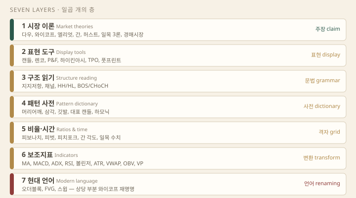
| 층 | 역할 | 대표 |
|---|---|---|
| 시장 이론 | 왜 그렇게 움직이는가 | 다우, 와이코프, 엘리엇, 간, 허스트, 일목 3론, 경매시장 |
| 표현 도구 | 같은 데이터를 어떻게 보여주는가 | 캔들, 렌코, P&F, 하이킨아시, TPO, 풋프린트 |
| 구조 읽기 | 고저·깨짐의 문법 | 지지저항, 채널, HH/HL, BOS/CHoCH |
| 패턴 사전 | 반복된다고 주장되는 형상 | 머리어깨, 삼각, 깃발, 대표 캔들, 하모닉 |
| 비율·시간 | 되돌림과 시점 | 피보나치, 피벗, 피치포크, 간 각도, 일목 수치 |
| 보조지표 | 가격·거래량의 변환 | MA, MACD, ADX, RSI, 볼린저, ATR, VWAP, OBV, VP |
| 현대 언어 | 기관·유동성 내러티브 | 오더블록, FVG, 스윕. 상당 부분은 와이코프 재명명 |
두 층은 특히 헷갈린다. 패턴 사전은 형상의 분류이지 왜 반복하는가의 이론이 아니다. 머리어깨가 반전 신호로 읽히는 것은 다우의 문법을 빌린 해석이고, 도감은 그 해석을 보증하지 않는다. 비율·시간 층도 마찬가지다. 피보나치와 피벗을 눈금으로 쓰면 도구이고, 가격이 따라야 할 법칙으로 믿으면 이론이 된다. 같은 물건이 손에 따라 층을 옮긴다.
유행은 매년 온다. 지도가 살아 있으려면 새 이름을 칸에 배정하는 절차가 필요하다. 다섯 질문이면 충분하다.
예를 들어 "기관의 새 진입 모델"이라는 이름이 유행하면 순서대로 묻는다. 새로운 반박 가능한 주장은 대개 없다. 표시 형식도 안 바꾼다. 색인을 검색하면 구조 파괴와 되돌림 진입의 조합으로 풀린다. 언어·구조·비율 세 칸에 걸쳐 앉는 이름이다. 결론은 새 층이 아니라 기존 칸의 조합이다. 이 판별이 끝나야 배울 것과 넘길 것이 나뉜다.
한 유행이 여러 칸을 걸치면 패키지로 본다. 일목균형표가 대표적이다. 시간론·파동론·가격론은 이론 층이고 구름 5선은 표현 도구다. 일목은 이론과 도구가 한 상자에 들어오는 셈이다. ICT/SMC도 구조 읽기와 언어와 비율(OTE)의 패키지다. 패키지는 뜯어서 칸에 나눠 놓는다. 상자째 이론 층에 올리면 검증 불가능한 어휘까지 주장 취급을 받는다.
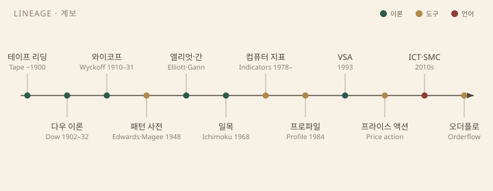
이름은 새것 같고 뿌리는 오래됐다. 체결 전표를 읽던 테이프 리딩6에서 출발해, 다우가 월스트리트저널 사설로 추세의 문법을 썼고 Hamilton과 Rhea가 정리했다. Schabacker가 그 계보를 책으로 이었다. 와이코프가 수급 국면을 얹고 Edwards와 Magee가 형상을 도감으로 묶었다[4]. 엘리엇과 간이 형태와 기하를, 일목이 시간·파동·가격의 패키지를 가져왔다. 컴퓨터가 들어오자 지표가 쏟아졌다. Steidlmayer의 프로파일이 시간을 가격 분포로 돌렸다. VSA가 와이코프를 봉 단위로 옮겼다. ICT/SMC가 그 어휘를 유동성으로 번역했다. 오더플로는 테이프 리딩의 디지털 귀환이다[5].
계보는 실용이다. 새 이름의 조상이 보이면 읽을 원전이 정해진다. 오더블록의 조상은 공급·수요 존이고 그 조상은 와이코프의 매집·분산 도표다. 조상을 모르면 매번 처음 발명된 것처럼 배운다. 같은 사건의 이름이 시대별로 갈리는 지점은 기법 간 관계와 용어 색인에 따로 모아 둔다.
분류표 자체도 주장이다. 경계가 특히 흐린 곳이 두 군데다. 프로파일은 표현 도구 칸에 뒀지만 Steidlmayer 본인은 그것을 시장을 읽는 철학으로 제시했다[3]. 도구로 쓰되 경매시장 이론5과 한 패키지로 읽는다. 피보나치도 격자로 쓰면 도구이고 자연법칙으로 믿으면 이론이 된다. 층은 물건의 속성이 아니라 사용의 속성에 가깝다.
공부 순서도 지도를 따라잡는다. 문법인 구조 읽기를 먼저 놓고 이론을 반증의 대상으로 평가한 뒤 도구를 용도별로 고른다. 언어는 마지막에 색인으로 번역하면 된다. 칸은 고정이 아니다. 새 유행이 어느 칸에도 앉지 못하면 유행이 아니라 지도를 의심한다. 칸을 고치는 것도 이 지도의 쓰임이다.
기술적 분석은 과거 가격과 거래량으로 확률을 조직한다. 미래를 확정하지 않는다.
세 가정은 한 사람의 설계가 아니라 30년에 걸친 편집의 결과다. 찰스 다우는 월스트리트저널을 창간하고 1902년 죽기까지 사설로 시장의 행동 원리를 산발적으로 썼다 — 스스로 이론이라고 부른 적은 없다. 사설의 자리는 윌리엄 P. 해밀턴이 이어받아 The Stock Market Barometer(1922)로 다듬었고[1], 로버트 레아가 The Dow Theory(1932)에서 오늘 읽히는 형태로 정리했다[2]. 이후 에드워즈와 메이기의 추세 추종 교과서[3], 머피의 종합서[4]가 같은 뼈대를 "세 가정"으로 명문화했다.
세 가정은 증명된 법칙이 아니라 작업가설이다. 각각의 의미와 균열을 이어서 본다.
할인1은 다우 사설이 반복한 주장이고, 표준 문구는 머피의 것이다 — "시장 행동은 모든 것을 할인한다(market action discounts everything)"[4]. 가격은 모든 참여자의 지식과 기대와 공포가 체결로 압축된 결과물이라는 뜻이다.
강한 형태로 읽으면 공개 정보든 비공개 정보든 다 들어 있다는 주장이 되어 차트만 보면 된다는 극단이 나온다. 실무에서 쓰는 건 약한 형태다 — 차트가 정보의 종합 반응이라는 정도. 뉴스의 내용보다 뉴스에 대한 가격의 반응을 읽는 자세다.
균열은 세 곳이다. 첫째, 정보 비대칭 — 내부자와 외부자가 보는 가격은 같지 않다. 둘째, 할인이 즉시라는 보장이 없다 — 실적 발표 후 수익률이 같은 방향으로 계속 미끄러지는 이상현상(실적 발표 후 표류, PEAD)이 반복 보고돼 왔다. 셋째, 반증 불가 — "아직 덜 반영됐다"로 모든 실패를 설명하면 가정이 아니라 신앙이 된다.
이 가정의 쓸모는 사후 해석을 끊는 데 있다. 왜 움직였는지를 찾는 대신 움직임 자체를 정보로 취급한다.
추세2의 정의는 기계적이다. 상승 추세는 고점과 저점이 계속 높아지는 상태(HH/HL), 하락 추세는 함께 낮아지는 상태(LH/LL), 어느 쪽도 아니면 횡보다. 다우의 세 운동 — 주추세, 2차 조정, 소파동 — 은 추세가 자기 유지된다는 주장의 원형이다.
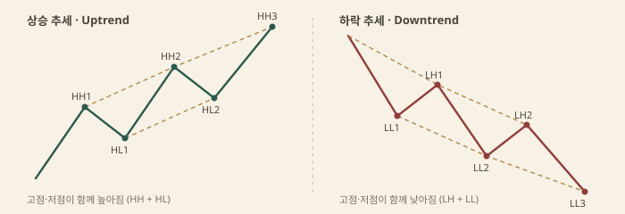
근거는 군중심리다. 정보는 모든 참여자에게 동시에 닿지 않고, 알아차린 순서대로 진입이 이어지면 방향이 유지된다. 여기에 손실 회피와 앵커링, 처분 효과가 겹치고, 추세 추종 자금의 유입이 추세 자체를 연장한다. 추세는 원인이 아니라 결과지만, 결과가 다음 원인이 된다.
한계는 사후성이다. 마지막 저점이 깨지기 전까지 추세가 살아 있는지는 아무도 모르고, 확인되는 시점엔 이미 상당 구간이 지났다. 그래서 추세 가정의 실용적 가치는 방향 예언이 아니라 무효화 조건이다 — 직전 HL이 깨지면 상승 시나리오를 폐기한다는 식이다.
논리 구조는 세 단계다. 인간의 탐욕과 공포는 시대가 바뀌어도 안정적이다 → 비슷한 상황에 비슷한 집단 반응이 나온다 → 가격 궤적에 비슷한 형태가 남는다. 패턴 도감 전체가 이 가정 위에 서 있다.
균열은 비약이다. "심리가 반복된다"에서 "형태가 반복된다"로 한 번, "형태가 같으면 결과도 같다"로 한 번 더 뛴다. 두 단계 모두 따로 검증돼야 하는데, 도감에서는 보통 결과 확정으로 팔린다. 반복은 형태의 반복이지 결과의 보장이 아니다.
식별도 주관적이다. 같은 구간을 한 사람은 삼각수렴으로, 다른 사람은 횡보로 읽는다. 패턴 이름은 진입 전에도 뒤늦게도 붙일 수 있어서, 검증 없는 패턴 주장은 진술이 아니라 수사가 된다. 이 편향 — 확증편향3 — 은 뒤의 실패 구멍에서 다시 본다.
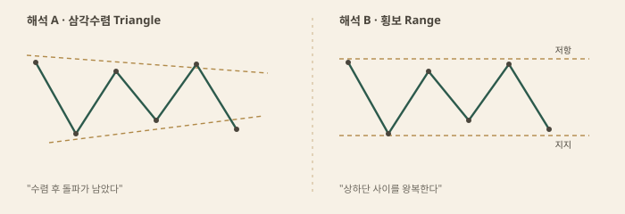
두 방법은 경쟁 관계가 아니라 같은 시장의 다른 시간축이다. 기본적 분석이 "무엇을 살지"에 답할 때 기술적 분석은 "언제, 어디서"에 답한다는 결합 프레임이 표준이다[4].
| 기본적 | 기술적 | |
|---|---|---|
| 질문 | 내재가치는 얼마인가 | 참여자가 지금 무엇을 하는가 |
| 데이터 | 재무, 금리, 실적 | 가격, 거래량, 폭, 센티먼트 |
| 시간축 | 분기~수년 | 틱~수개월 |
| 전제 | 가격은 가치로 수렴한다 | 가격은 참여자 행동의 합산이다 |
| 약점 | 단기 수급을 늦게 봄 | 펀더 충격을 무시하기 쉬움 |
| 결합 | 무엇을 | 언제·어디서 |
프레임이 다르면 같은 차트에서 다른 결론이 나오는 게 정상이고, 그건 충돌이 아니라 레이어 차이다. 다음 두 섹션은 표의 약점 칸을 여는 일이다.
도구의 결함보다 사용의 결함이 더 크다. 실패는 세 구멍에서 반복된다.
MA, MACD, 일목 기준선, ADX는 과거 창의 요약이다. 추세 추종에는 쓸모가 있고 전환점 예측에는 늦다. 지연은 결함이 아니라 설계다 — 잡음을 거르는 대가로 늦는다. 결함은 후행 지표에 선행 예언을 요구하는 사용법 쪽에 있다.
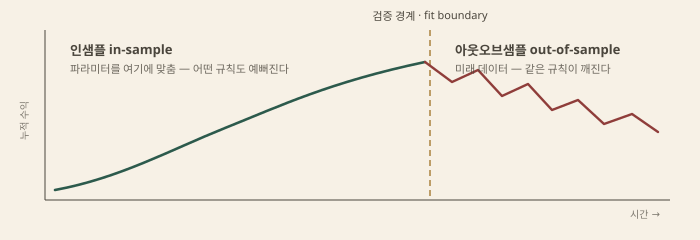
학술 쪽은 혼재다. 파마(1970)의 효율시장가설8은 세 형태로 나뉜다 — 약형은 과거 가격 정보, 준강형은 공개 정보 전부, 강형은 비공개까지 반영한다는 주장이다. 약형이 성립하면 과거 가격만으로는 초과수익이 불가능하고, 이것이 기술적 분석에 대한 정면 반박이었다[6].
반박의 반박도 나왔다. 로와 맥킨레이는 분산비 검정으로 미국 주간 수익률(1962~1985)에서 유의한 양의 자기상관을 찾아 랜덤워크를 기각했고, A Non-Random Walk Down Wall Street(1999)으로 정리했다[7]. 브록·라코니숙·르바론(1992)은 다우지수 약 90년(1897~1986)에 이동평균과 레인지 돌파 규칙을 대입해 매수 신호 후 수익률이 매도 신호 후보다 유의하게 높다고 보고했다[8].
다만 설리번·티머만·화이트(1999)가 다중비교를 보정하고 규칙 우주를 넓혀 다시 시험하자 우위가 표본과 기간에 따라 흔들렸다[9]. 로의 적응적 시장 가설9(2004)은 이 혼재를 설명한다 — 효율성은 고정 상태가 아니라 참여자 구성과 환경의 함수이고, 이윤 기회는 생겼다가 경쟁이 몰리면 사라진다[10].
실무 함의는 그래서 명확하다. 가정이 참인지 증명할 수 없으므로 사용법만 남는다 — 예언이 아니라 시나리오 + 무효화 가격 + 크기. 조건이 서면 시나리오를 열고, 무효화 가격이 깨지면 폐기하며, 노출 크기는 무효화까지의 거리로 정한다. 이 핸드북의 나머지 챕터는 이 프레임 위에서 읽는다.
다우가 문법을 주고, 와이코프가 수급 국면을 주며, 엘리엇·간·허스트·일목이 형태와 시간을 얹는다.
다우 이론은 한 사람의 완성작이 아니다. 찰스 다우는 월스트리트저널을 창간하고 1902년 죽기까지 사설에 시장의 행동 원리를 산발적으로 썼다 — 스스로 이론이라 부른 적은 없다. 사설을 이어받은 윌리엄 해밀턴이 The Stock Market Barometer(1922)로 다듬었고[2], 로버트 레아가 The Dow Theory(1932)로 오늘의 형태를 만들었다[1]. "여섯 테넌트" 목록은 에드워즈·메이기[8]와 머피의 교과서가 표준화한 요약이다.
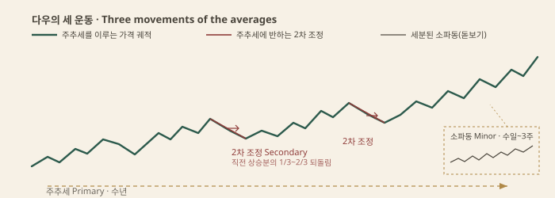
실전에서 남는 것은 여섯째다. 추세 지속 가정은 예언이 아니라 무효화 조건으로 읽힌다 — 직전 2차 저점이 깨지기 전까지 상승 시나리오는 유지하고, 깨지면 폐기한다. 한계는 후행성이다. 반전 확인이 올 때는 움직임의 상당 부분이 지났다 — 대가는 조기 진입의 가짜 신호 회피다. 서비스 경제에서 운송 평균이 산업 평균의 검증자로 남는가도 열린 문제다.
리처드 와이코프는 주자(runner)로 시작해 브로커와 테이프 리더가 된 실무자다. Studies in Tape Reading(1910)으로 체결 흐름 읽기를 정리했고, 1931년 통신 코스에서 지금 와이코프라 부르는 체계를 남겼다[3]. 명제는 하나다 — 가격과 거래량은 대형 자금의 발자국이고, 수요와 공급의 논리로 읽는다.
누가 급하면 가격이 움직인다. 수요 > 공급이면 오르고 반대면 내린다. 발자국은 가격과 거래량.
횡보(원인)가 클수록 이후 추세(결과)가 크다. 원인의 크기는 P&F 카운트로 재서 목표폭을 잡는다.
거래량(노력)은 큰데 가격 진행(결과)이 없으면 흡수다. 노력과 결과의 괴리가 반전 경고다.
세 법칙이 읽는 대상은 합성 운영자2다 — 대형 세력 전체를 한 사람으로 의인화한 허구다. 실존 세력이 아니라 사고 장치로, 그가 언제 사고 언제 시험하고 언제 끌어올리는지를 추론하면 수급 국면이 서사가 된다.
매집3은 다섯 단계다. 단계 A는 하락을 멈추는 사건들 — 예비 지지(PS), 공포의 매도 클라이맥스(SC), 자동 반등(AR), 저거래량 재시험(ST)이 레인지의 위아래를 잡는다. 단계 B는 원인이 쌓이는 횡보다. 단계 C는 최종 공급 시험으로, 하단을 깨고 즉시 회수하는 스프링4이 대표 사건이다 — 현대 언어의 유동성 스윕과 같은 사건이다(유동성 언어). 단계 D는 상단을 거래량과 함께 넘는 강세 신호(SOS)와 얕은 되돌림(LPS), 단계 E가 마크업이다. 분산은 거울이다 — 예비 공급(PSY), 매수 클라이맥스(BC), 상단을 찌르고 실패하는 업스러스트(UT/UTAD), 약세 신호(SOW), 최종 공급점(LPSY)을 거쳐 마크다운으로 내린다5.
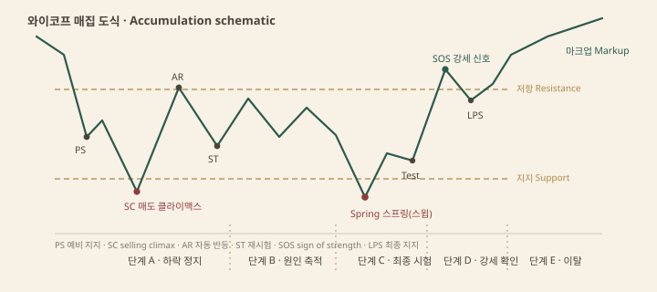
실전은 조건 → 시나리오 → 무효화다. 하단 이탈 후 거래량 없이 즉시 회수되고 재이탈이 실패하면 스프링 시나리오가 열리고, 무효화는 스프링 저점이다. 한계는 라벨의 사후성이다 — SC나 LPS는 마크업이 나온 뒤에야 확정되고, 실제 레인지는 이벤트를 건너뛰거나 반복한다. 라벨을 먼저 붙이고 가격을 끼워 맞추는 게 실패의 첫 원인이다.
랠프 넬슨 엘리엇은 회계사 출신으로, 병상에서 지수 차트를 해부해 The Wave Principle(1938)과 Nature's Law(1946)에 파동 체계를 남겼다[9]. 오늘의 형태는 프로스트와 프렉터의 Elliott Wave Principle(1978)이 표준화한 것이다[4]. 주장은 단순하다 — 가격은 추세 방향 다섯 파(동기파)와 반대 세 파(조정파)의 반복이고6, 같은 형태가 모든 시간 규모에서 재귀적으로 나타나는 프랙탈이다.
절대 조건은 세 개뿐이다. ① 2파는 1파의 시작점을 깨지 않는다. ② 1·3·5파 중 3파가 가장 짧을 수 없다. ③ 4파는 1파의 가격 영역에 들어오지 않는다 — 다이아고날7은 예외다. 나머지는 규칙이 아니라 경향이다 — 3파가 확장되기 쉽다, 2파와 4파는 형태가 교대한다, 3파는 1파의 1.618배가 흔하다 같은 것들이다. 조정의 내부 구조는 지그재그 5-3-5, 플랫 3-3-5, 삼각수렴 3-3-3-3-3으로 정리된다. 파동의 규모는 그랜드수퍼사이클에서 서브미뉴엣까지 아홉 디그리다8.
실전 문제는 카운트의 다중성이다. 같은 구간에 유효한 카운트가 두세 개 나오는 게 보통이다. 그래서 카운트는 답이 아니라 시나리오 목록이다 — 주 카운트와 대안 카운트를 나란히 들고, 각각의 무효화 가격(철칙이 깨지는 지점)을 적어 둔다. 무효화가 숫자로 정해지는 게 실질적 장점이고, "아직 파동이 완성되지 않았다"로 실패를 미루는 순간 검증 불가능한 언어가 된다. 학술적 반례도 그 지점에 있다 — 규칙이 느슨한 곳에서 해석 자유도가 커져 사후엔 항상 맞고 사전엔 흔들린다.
윌리엄 간은 1900년대 초의 전설적 트레이더로, Truth of the Stock Tape(1923)와 45 Years in Wall Street(1949)를 남겼다[5]. 중심 명제는 시간=가격이다 — 두 축을 같은 단위로 놓으면 시세의 균형이 각도로 읽힌다는 발상이다.
도구는 간 팬이다9. 중요 저점에서 시간 1단위당 가격 1단위로 오르는 1x1선을 긋고, 위에 2x1·4x1, 아래에 1x2·1x4를 펼친다. 가격이 1x1 위를 지키면 시간과 균형을 이룬 강세, 깨지면 다음 각도선이 받는다. 가격 기하로는 Square of 9 — 격자에 가격을 나선으로 배열해 지지·저항 수치를 뽑는 장치 — 가 대표적이고, 시간축으로는 고저점 기념일과 계절 주기를 봤다.
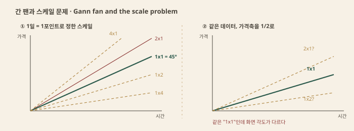
한계가 구조적이다. 시간·가격의 "1단위"는 자의적이다 — 1일에 1포인트면 1x1이 45°지만, 축을 바꾸면 같은 선이 다른 각도로 그려진다. 스케일이 자의적이면 각도는 무의미하다. 살아남는 것은 발상이다 — 큰 움직임 뒤에는 그에 견줄 시간이 필요하고, 변화 시점을 가격폭과 대응시켜 본다는 시간론의 씨앗이다. 일목균형표의 시간론이 이 씨앗을 더 정교하게 키웠다.
제이 엠 허스트는 항공 엔지니어 출신으로, The Profit Magic of Stock Transaction Timing(1970)에서 가격을 사이클의 합으로 다뤘다[6]. 명제는 셋이다. 가격은 파장이 다른 사이클의 합성에 추세 성분을 얹은 것이고, 인접 사이클의 파장은 대략 2:1의 조화 비율로 나열되며, 비슷한 파장은 명목 주기라는 이름으로 묶인다 — 명명 원칙이다10.
합성의 결과가 저점 동기화다 — 긴 사이클의 저점과 짧은 사이클의 저점이 겹치는 곳에서 가장 깊은 저점이 만들어진다. 검증 도구도 남겼다. FLD는 가격을 사이클 파장의 절반만큼 미래로 옮긴 선으로, 넘는 깊이로 사이클의 위치와 목표폭을 추정한다. VTL은 같은 디그리의 연속한 사이클 저점을 잇는 추세선으로, 이탈이 상위 사이클의 반전 신호다11.
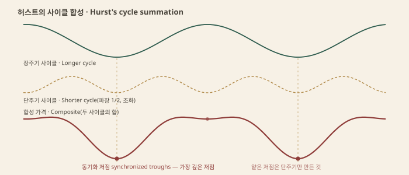
실전에서 사이클 분석은 변화 시점의 창을 주는 추정 장치다. 문제는 자유도다 — 파장·진폭·위상을 동시에 맞추면 어떤 과거도 설명되고, 엘리엇의 형태 카운트와 함께 맞추면 자유도가 곱해져 과적합이 된다. 본연의 쓸모는 역방향이다 — 예상 저점 시점을 창으로 두고 그 안에서 가격 확인을 기다리며, 창이 지나면 가설을 버린다.
일목균형표는 도구 하나가 아니라 상자다. 호소다 고이치(細田悟一)가 필명 일목산인(一目山人)으로 1930년대에 연구를 시작해 1969년부터 전 7권으로 펴낸 체계다[7]. 이름 뜻대로 "한눈에 균형"이지만, 서구에 전해진 5선 차트는 상자 안의 표현 도구일 뿐이고 원전의 이론은 4론으로 짜여 있다12.
시간론이 뼈다. 기본수치 9·17·26을 변화일의 단위로 쓰고, 과거 변화일 간격이 다음 간격과 대등해진다는 대등수치로 시점을 잰다. 파동론은 형태를 나눈다 — 단방향 I파동, 반전 V파동, 상승-조정-재상승의 N파동이 기본형이고 P·Y·S파가 보조다. 가격론은 A→B 상승 후 C까지 조정했을 때 목표가를 네 계산치로 잡는다 — E값 = B + (B−A), N값 = C + (B−A), V값 = B + (B−C), NT값 = C + (C−A)/2. 운형론은 투기 심리의 균형을 재는 지표군이다.
표현 도구인 5선과는 구분해서 읽는다. 전환선(9일 중간값)과 기준선(26일), 선행스팬1((전환+기준)/2를 26일 선행), 선행스팬2(52일 중간값, 26일 선행) 사이를 칠한 것이 구름이고, 후행스팬은 종가를 26일 뒤로 옮긴 선이다. 신호로 묶은 것이 삼역전13이다 — 전환선이 기준선 위, 후행스팬이 26일 전 가격 위, 가격이 구름 위, 셋의 동시 성립이다.
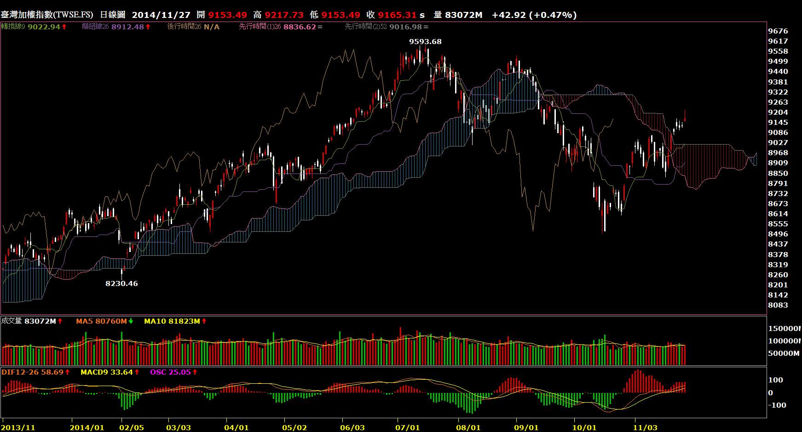
한계는 패키지의 오독이다. 구름과 교차만 쓰면 보조지표 챕터의 이동평균 응용과 다를 바가 없다 — 원전의 본체는 시간론이다. 기본수치의 근거도 당시 일본의 주 6일 거래다 — 9는 1주 반, 26은 한 달, 52는 두 달의 거래일이다. 주 5일 시장에서 수치가 환경 산물인지 보편 리듬인지를 물어야 하고, 4론을 통째로 믿을지 5선을 도구로만 빌릴지는 분리해서 정한다.
이후 모든 프라이스 액션의 문법. 스윙의 고저를 얼마나 크게 자를지가 곧 신호의 빈도다.
가격 구조의 원자는 스윙1이다. 스윙 고점은 양옆이 더 낮은 꼭짓점, 스윙 저점은 양옆이 더 높은 골짜기다. 정의는 간단한데 문제는 크기다 — "양옆"을 몇 봉으로 잡느냐, 되돌림을 몇 퍼센트부터 인정하느냐에 따라 같은 차트에서 스윙의 수가 달라진다.
기계적 정의는 두 계열이 있다. 프랙탈2은 양옆 두 봉보다 고가가 높은 봉을 고점으로 찍는 5봉 규칙이다 — 윌리엄스가 이름 붙인 최소 단위 스윙이다[1]. 지그재그3 계열은 마지막 피벗에서 정한 비율 이상 되돌려야 새 스윙으로 인정하는 크기 필터다. 프랙탈은 봉 수로 자르고 지그재그는 가격 폭으로 자른다.
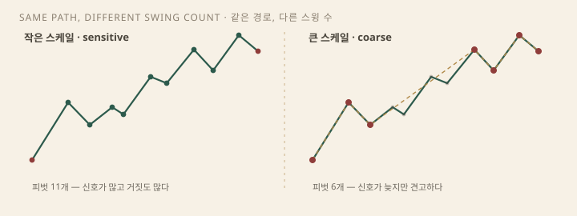
자의성은 여기서 나온다. 같은 경로를 1% 필터로 자르면 스윙이 열 개, 10%로 자르면 세 개다. 스윙이 많으면 구조 신호도 많아지고 거짓도 많아진다. Aronson이 지적한 주관적 분석의 첫 구멍이다 — 규칙으로 고정되지 않은 스윙은 검증이 안 선다[2]. 해결은 정답 스케일을 찾는 일이 아니다. 스케일을 먼저 선언하고 문장을 읽는 것이다 — "이 노트에서 스윙은 좌우 2봉 프랙탈이다"처럼.
실무 규칙은 하나다. 자르는 크기를 거래 주기와 맞춘다. 스윙 트레이더가 5봉 프랙탈로 자르면 신호가 잡음에 잠기고, 큰 필터는 전환을 늦게 알린다. 빈도와 지연의 트레이드오프다.
스윙 수열이 정해지면 추세는 정의로 떨어진다. 상승 추세는 고점과 저점이 함께 높아지는 상태(HH/HL), 하락 추세는 함께 낮아지는 상태(LH/LL), 어느 쪽도 성립하지 않으면 횡보다. 이 기계적 문장의 원전은 다우다 — 레아가 정리한 상승 추세는 "연속된 랠리가 이전 고점을 넘고 조정이 이전 저점 위에서 멈추는" 상태다[3]. 봉이 아니라 스윙의 수열로 추세를 읽는 이 문법이 이후 모든 구조 읽기의 뼈대다.
횡보는 정의의 빈칸이다. 고점도 저점도 한 방향으로 밀리지 않는 구간 — 레인지다. 다우는 이를 '라인(line)'이라 불렀고, 와이코프 계열로는 매집·분산 국면으로 읽힌다(고전 이론). 구조 문법으로는 추세의 부재이지 문법의 부재가 아니다 — 레인지의 상·하단이 곧 그 구간의 스윙이다.
한계는 수열의 미완성이다. 마지막 HL은 되돌림이 끝나고 다음 고점이 나온 뒤에야 확정된다. 진행 중인 되돌림이 HL인지 전환의 첫 하락인지는 사후에만 판명된다. 그래서 구조 정의는 예언이 아니라 조건 문장으로 쓴다 — "마지막 확정 HL이 깨지면 상승 추세 가정은 폐기."
스윙이 깨지는 방향은 두 가지다. BOS4는 추세 방향으로 직전 스윙을 깨는 사건이다 — 상승 추세에서 직전 고점 위로의 돌파. 추세의 자기 확인, 지속 신호다. CHoCH5는 반대 방향의 첫 파괴다 — 상승 추세에서 마지막 HL 아래로의 이탈. 추세 문장에 처음 등장한 다른 품사, 조기 반전 경고다.
이 구분의 뿌리는 다우의 마지막 원칙이다 — "추세는 명확한 반전 신호가 나타날 때까지 유지된다고 가정한다"[3]. BOS는 유지의 근거이고 CHoCH는 그 반전 신호의 구조적 형태다. ICT 계열 언어에서는 같은 사건을 MSS6라고도 부른다[4] — 이름은 셋이고 사건은 하나다. 색인에서는 같은 칸에 둔다.
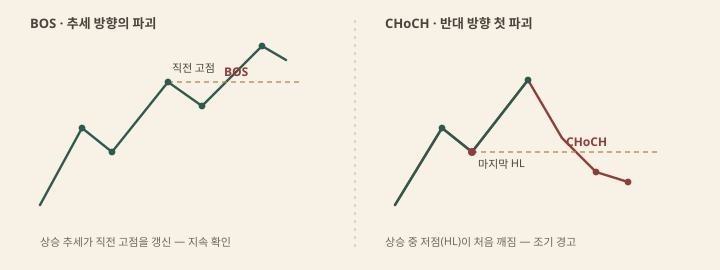
무엇을 '깨짐'으로 셀지는 별도의 규칙이다. 꼬리가 스윙을 넘었다가 회수되면 파괴가 아니라 스윕이다 — 종가 기준이 일반적이고, 에드워즈와 메이기는 이탈 폭에 완충(예: 3% 규칙)을 두라고 제안했다[5]. 규칙은 하나만 고정하면 된다. 그리고 CHoCH는 확인이 아니라 경고다 — 첫 반대 파괴 뒤에도 가격은 원 방향의 고점을 한 번 더 찍을 수 있다. 경고를 시나리오로 바꾸는 것은 다음 스윙의 형태다.
지지는 매도를 버티는 수요의 집중, 저항은 매수를 돌려보내는 공급의 집중이다[5]. 중요한 것은 그것이 선이 아니라 존7이라는 점이다. 거래가 몰린 곳은 한 가격이 아니라 가격대이고, 반응도 그 폭 안 어딘가에서 온다. 한 픽셀의 수평선을 긋고 위아래로 세계를 나누는 것은 구조가 아니라 미신이다.
존에서 반응하는 이유는 기억이다. 세 부류가 같은 자리를 기억한다. 물린 매수자는 본전으로 돌아오면 손실 없이 나오려 판다 — 고통의 기억. 놓쳤던 매수자는 처음 놓친 가격대로 돌아오면 다시 산다 — 후회의 기억. 그리고 스윙 고저 너머에는 스톱 주문이 쌓인다 — 유동성의 기억[6]. 셋이 같은 자리를 두 번째 기회로 만든다.
역할은 교체된다. 깨진 저항은 지지가 되고 깨진 지지는 저항이 된다 — 극성(polarity)8 원리다[6]. 돌파 매수자의 본전과 일찍 판 매도자의 후회가 같은 존에서 만난다.
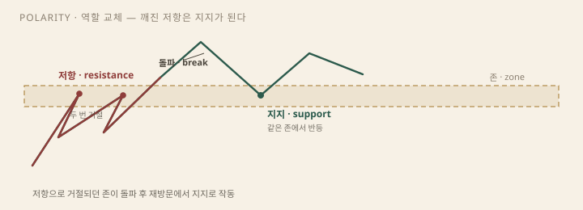
한계는 둘이다. 존을 얼마나 관통해야 깨진 것인지는 자의적이고, 테스트가 반복될수록 존이 강해진다는 직관과 약해진다는 직관이 공존한다 — 재방문 때마다 그 자리의 주문이 소진된다는 미시구조 논리는 후자를 지지한다. 존도 결국 조건 문장이다 — "이 존 아래로 종가가 닫히면 지지 시나리오는 폐기."
추세선9은 스윙 둘을 잇는 선이다 — 상승 추세선은 저점 둘, 하락 추세선은 고점 둘을 잇는다. 둘이면 누구나 선을 그을 수 있다. 그래서 머피의 규칙은 세 번째 접점을 요구한다 — 임시 추세선이 세 번째 되돌림을 버텨낼 때 비로소 유효하다고 본다[6]. 채널은 추세선의 평행선이다. 되돌림이 반대편 선에서 멈추면 통로로 읽는다.
문제는 선이 그어진다는 사실이 선을 지켜주지 않는다는 것이다. 깨진 선은 다시 그으면 되고, 기울기를 바꾸면 맞는 선은 얼마든지 나온다 — 팬 라인(fan lines)은 그 "다시 긋기"를 기법으로 만든 경우다. 세 점이 안 맞으면 차트가 아니라 선을 의심한다.
용법은 예측선이 아니라 무효화 선이다 — "이 선 아래에 종가가 닫히면 추세 가정을 내려놓는다." 선은 가격이 지켜야 할 법칙이 아니라 시나리오의 파기 조건이다. 지지·저항과 마찬가지로 선도 존으로 취급하는 편이 정직하다 — 관통 허용 폭을 미리 정해 둔다.
스윙 저점에서 고점까지의 구간을 50%로 가른다. 중간선 위쪽 절반이 프리미엄, 아래쪽 절반이 디스카운트10이고, 중간선 자체가 EQ — 균형(equilibrium)이다[4]. ICT 어휘이지만 생각 자체는 오래됐다 — 되돌림의 절반은 피보나치의 0.5 되돌림과 같은 선이다(비율과 투사).
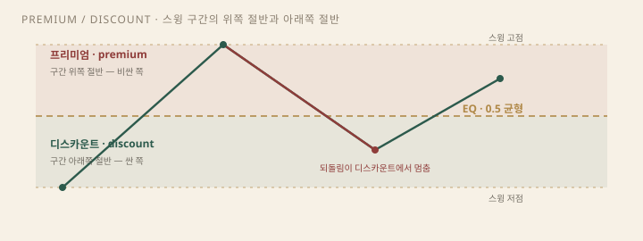
쓸모는 싸게 사는 감각이 아니라 무효화까지의 거리다. 같은 상승 시나리오라도 프리미엄에서 사면 스윙 저점까지의 거리가 멀고, 디스카운트에서 사면 짧다. 손익비는 진입 지점의 함수다. 추세 추종의 되돌림 매수가 "50% 근처"를 기다리는 이유다 — 균형 아래에서 사는 것은 구간의 비싼 쪽을 피하는 규칙이다.
한계는 분명하다. 50%는 법칙이 아니라 규약이다 — 가격이 중간값을 기억해서 멈추는 게 아니라, 그 선이 기다림의 기준을 준다. 깊은 되돌림은 디스카운트를 지나 저점을 다시 시험한다. 디스카운트 진입의 무효화는 여전히 스윙 저점 자체다.
모든 구조 문장에는 묵시적 주어가 있다 — 타임프레임이다. 일봉의 되돌림 한 번은 15분봉의 하락 추세 전체이고, 주봉의 횡보는 시간봉의 추세 사이클 여러 번을 담는다. 같은 지점이 일봉에서는 HL이고 5분봉에서는 BOS와 CHoCH가 몇 번씩 지난 자리다. 구조 문법은 스케일을 가리지 않고 돌아간다 — 그것이 이 문법의 힘이자 함정이다.
계층의 용법은 역할 분담이다. 상위 타임프레임이 국면을 준다 — 어느 존 근처인지, 추세 방향이 어느 쪽인지. 하위 타임프레임이 실행을 준다 — 그 존 안에서 구조 전환이 보일 때 진입한다. 엘더의 트리플 스크린이 이 분담을 체계로 만든 고전이다[7] — 조수(tide)는 큰 차트에서 읽고 파동(wave)은 작은 차트에서 잡는다.
역할을 뒤집으면 문장이 어긋난다. 5분봉 CHoCH를 주 추세의 반전으로 부르는 것이 대표적 오용이다 — 하위 구조 전환의 대부분은 상위 스윙의 되돌림이다. 이름 뒤에 스케일을 붙이는 습관이 방어다 — "일봉 HL", "15분봉 BOS". 상위의 존과 하위의 트리거가 같은 방향을 가리킬 때만 문장이 완성된다.
새 물리학이 아니다. 공급·수요와 와이코프를 유동성 어휘로 다시 쓴 프레임이다. 피어리뷰로 검증된 예측 모형은 아니다.
ICT는 The Inner Circle Trader, 마이클 J. 허들스턴(Michael J. Huddleston)의 필명이다. 2010년대 유튜브 무료 강의와 유료 멘토십으로 퍼진 그의 어휘를 통칭하는 이름이 SMC(Smart Money Concepts)다. 공식 채널조차 저술이 아니라 강의 목록이라, 이 체계에는 교과서에 해당하는 원전이 없다[1].
내용의 조상은 오래됐다. "스마트머니"라는 발상 자체가 와이코프의 합성 운영자1 — 대형 자금을 한 사람으로 의인화한 허구 — 와 같은 뿌리다. 와이코프의 매집·분산 도표가 오더블록과 스윕으로, 공급·수요 존이 존 단위 진입으로, 다우의 구조 파괴가 BOS·CHoCH로, 피보나치 되돌림이 OTE로 번역됐다[2].
재명명에는 이유가 있다. 흩어진 고전 개념을 "유동성" 하나의 서사로 묶으면 읽는 순서가 생긴다 — 주문이 어디 모였는가, 모인 주문을 먹었는가, 그다음 어디로 가는가. 대가도 있다. 원전과 끊긴 어휘는 검증 경로를 잃는다. 스프링이 유동성 스윕으로 불리는 순간 와이코프의 국면 문맥이 빠지고, 남는 것은 봉 하나의 형상이다.
대응표는 아래와 같다. 왼쪽이 새 이름이고 오른쪽이 원래 이름이다.
| SMC / ICT | 의미 | 기존 이름 |
|---|---|---|
| 유동성 풀 | 스윙 고저 너머 스톱 군집 | 지지저항, 라운드 넘버 |
| 오더블록 | 강한 변위 직전 마지막 반대색 구간 | 공급·수요 존 |
| FVG | 3봉이 안 겹치는 빈 구간 | 갭, 비효율 |
| BOS | 추세 방향 스윙 파괴 | 돌파, 지속 |
| CHoCH | 반대 방향 첫 파괴 | 다우 반전 신호 |
| 스윕 | 찔러 보고 즉시 복귀 | 가짜 돌파, 스프링/업스러스트 |
| Inducement | 본존 앞의 작은 미끼 | 소규모 테스트 |
| OTE | 0.62–0.79 되돌림 | 피보 황금 되돌림 |
유동성 풀2은 체결을 기다리는 주문이 모인 가격대의 SMC 이름이다. 어디에 모이는가는 새 발견이 아니다. 스톱의 위치는 예측 가능하다 — 직전 고점 위에는 숏의 매수 스톱과 돌파 추종자의 신규 매수가, 직전 저점 아래에는 롱의 매도 스톱과 신규 매도가 쌓인다. 같은 높이의 고점이나 저점이 둘 이상 나란히 서면(equal highs/lows) 그 너머의 군집은 더 두꺼워지고, 라운드 넘버는 심리적 눈금이라 주문이 자연히 그 주변에 걸린다.
실증도 있다. Osler는 외환 딜러의 실제 주문 데이터에서 스톱 주문이 지지·저항과 라운드 넘버 부근에 군집하고 그 군집이 소화되는 동안 가격이 가속한다고 보고했다[3]. 앞선 연구에서는 지지·저항 수준 부근에서 반전이 유의하게 잦다는 결과를 냈다[4]. 미시구조 쪽 근거는 이 정도다 — 주문이 거기 모이고 모인 주문이 체결되면서 가격을 민다.
분리해서 읽어야 하는 것은 서사다. "기관이 리테일의 스톱을 사냥하려고 차트를 움직인다"는 이야기와 "대량 주문은 유동성이 모인 곳에서만 채워진다"는 실행 논리는 다른 명제다. 후자는 군집 실증과 맞닿아 있다 — 큰 포지션을 채우려면 반대편 물량이 두꺼운 곳, 스톱이 쌓인 곳으로 가야 한다는 논리다. 전자는 의도의 명제라 반증할 수 없다.
유동성 스윕3은 군집 자리를 찔러 보고 즉시 복귀하는 사건이다. 레인지 하단 이탈 후 회수는 와이코프의 스프링, 상단 이탈 후 실패는 업스러스트와 같은 사건이고[2], 고전 도감에서는 가짜 돌파(false breakout)로 불렸다[5]. 이름은 셋이고 봉은 하나다.
메커니즘은 단순하다. 스톱이 체결되며 시장가 물량을 공급하고 그 물량을 받아 낸 반대 주문이 더 크면 가격은 되밀린다. 스윕의 핵심은 이탈이 아니라 복귀 속도다 — 이탈 가격대에 머무르면 스윕이 아니라 진행 중인 돌파다.
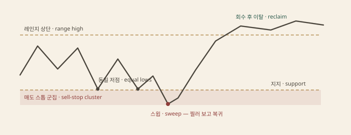
시나리오 프레임은 이렇게 쓴다. 조건 — 유동성 풀이 식별되고 꼬리 이탈 뒤 레인지 안으로 복귀하는 봉이 닫힌다. 시나리오 — 복귀 방향으로 진입을 검토한다. 무효화 — 스윕 꼬리의 끝. 꼬리 너머로 다시 이탈하면 시나리오를 폐기한다.
한계는 판정 시점이다. 스윕과 진짜 돌파는 사후에만 갈리고, 꼬리가 얼마나 길어야 이탈이며 얼마나 빨리 돌아와야 회수인지는 규칙이 아니라 관행이다. 같은 봉을 한 사람은 스윕으로, 다른 사람은 돌파 초기로 읽는다.
변위4는 SMC의 전제 조건이다. 몸집 큰 봉이 같은 방향으로 연속해서 나는 강한 이동 — 고전 표현으로는 탄력 있는 돌파다. 변위가 있어야 그 직전 구간과 그 안의 빈틈이 의미를 얻는다.
오더블록5은 강한 변위 직전의 마지막 반대색 구간이다. 상승 변위 앞의 마지막 하락봉이 매수 오더블록이다. 서사는 "기관이 주문을 남긴 자리"지만 차트에서 보이는 실물은 변위 전의 마지막 반대 봉이고, 기능은 공급·수요 존과 같다 — 가격이 되돌아왔을 때 반응이 나오는지 보는 존이다[2].
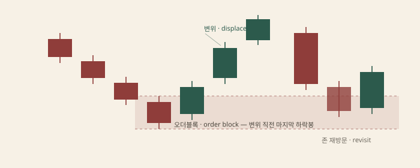
FVG6는 세 봉에서 첫째 봉의 고가와 셋째 봉의 저가(상승 변위 기준)가 겹치지 않아 생기는 빈 구간이다. 체결이 건너뛴 자리라 불균형이라 부르고, 고전 어휘로는 갭이다[5].
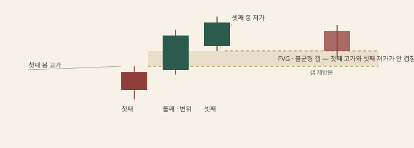
쓰임은 재방문이다. 변위로 떠난 가격이 되돌아와 오더블록이나 갭을 다시 밟으면 반응 후보로 본다. 무효화는 존의 원단이다 — 오더블록이면 그 봉의 저가(매수 기준) 이탈, 갭이면 완전히 채운 뒤 반대로 빠지는 것이다.
한계는 측정의 주관성이다. 존의 경계를 꼬리까지로 잡을지 몸통만으로 잡을지, 어떤 변위가 "강한" 변위인지에 공인 규격이 없다. 같은 구간에서 오더블록이 두 개 나오거나 아예 안 나오는 일이 흔하다. 모든 갭이 메워지는 것도 아니다 — 메워진다는 기대 자체가 검증이 필요한 주장이다.
구조 어휘는 가격 구조에서 정의한 것과 같고, 여기서는 SMC 문맥에서의 자리만 잡는다. BOS는 추세 방향으로 직전 스윙을 깨는 지속 신호, CHoCH는 반대로 처음 깨지는 조기 반전 경고 — 다우 문법의 반전 신호다. SMC 읽기에서 둘은 진입 신호가 아니라 방향 필터다.
프리미엄·디스카운트7는 위치 어휘다. 스윙 구간의 50% 위가 프리미엄, 아래가 디스카운트고 중간선은 피보 0.5와 같은 생각이다. 매수는 디스카운트에서, 매도는 프리미엄에서 찾는다는 규칙은 "비싼 데서 사지 말라"는 격언의 도표화다.
인듀스먼트8는 본존 앞에 놓인 작은 유동성이다 — 목표 구간 직전의 얕은 스윙이 먼저 먹히는 미끼라는 읽기다. OTE9는 0.62~0.79 되돌림, 피보나치 황금 되돌림의 ICT 이름이다. 디스카운트 안쪽의 깊은 되돌림으로 진입 후보를 좁히는 장치다. 킬존10은 런던·뉴욕 세션 겹침처럼 유동성이 켜지는 시간대의 이름이다.
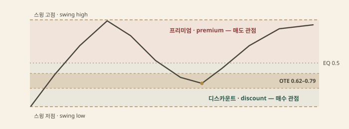
한계는 조합의 임의성이다. 이 어휘를 몇 개나 얹어야 "셋업"인지는 강의마다 다르다. 조건이 늘수록 사례는 예뻐지고 표본은 줄어든다 — 과최적화와 같은 구멍이다.
네 단계면 충분하다.
이름을 빼면 고전 프라이스 액션이다. 1단계는 지지·저항 표시이고, 2단계는 가짜 돌파 판독이며, 3단계는 다우의 추세 문법이고, 4단계는 공급·수요 존의 되돌림 진입이다. 유동성 언어의 실용은 이 네 칸을 한 순서로 묶어 준다는 데 있다 — 기억 장치로서의 값이다.
한계는 세 겹이다. 첫째, 이 용어 체계는 피어리뷰를 거친 적이 없다. 출판된 원전이 없고 강의와 커뮤니티 문서가 전부라, 정의 자체가 버전마다 흔들린다. 둘째, 식별이 주관적이다. 어디까지가 스윕이고 어디서부터가 존인지, 어떤 변위가 "강한" 변위인지에 측정 규격이 없어 같은 차트에서 다른 답이 나온다. 셋째, 검증이 스크린샷이다. 맞은 사례만 남는 데모는 확증편향의 재료이고, 실패 사례는 "셋업이 아니었다"로 소거된다.
취할 것과 버릴 것이 나뉜다. 취할 것은 유동성이라는 관점이다 — 주문이 어디 모이는지를 묻는 습관은 미시구조 실증과 맞닿아 있다. 버릴 것은 의도의 서사다. "기관이 사냥한다"는 문장은 반증할 수 없으므로 시나리오에 들어가지 못한다. 이름은 빌리되 검증은 고전의 방식인 조건·시나리오·무효화로 한다.
가격은 같고 버리는 정보가 다르다. 차트 종류의 본질은 필터다.
모든 차트의 원료는 하나다 — 거래소가 중계한 체결의 열. 이를 봉 단위로 자르면 시가·고가·저가·종가·거래량, OHLCV1 다섯 값이 나온다. 차트 유형이 갈리는 지점은 데이터가 아니라 버리기다. 같은 열에서 무엇을 지우고 무엇을 남기는가가 그 차트의 성격과 쓰임을 정한다.
버리는 축으로 나누면 네 계열이다. 시간축 차트는 가로축의 시간을 지키고 봉 안의 정보를 선택적으로 지운다 — 라인은 고저를, 캔들은 봉 안의 경로를 버린다. 가격축 차트는 시간 자체를 버린다 — 정한 폭만큼 움직일 때만 새 칸이 생긴다. 활동량축 차트는 시계를 버리고 체결 수·거래량으로 봉을 닫는다. 분포 차트는 순서를 버리고 가격대별 빈도만 남긴다.
필터의 대가는 해상도다. 잡음이 줄어든 만큼 버린 정보에는 답할 수 없다. 라인에서 당일 변동폭은 안 보이고, 렌코에서 반전이 며칠 걸렸는지는 지워졌고, TPO에서 어느 가격이 먼저 거래됐는지는 순서와 함께 사라진다. 차트를 고른다는 것은 어떤 질문에 답할지를 먼저 정하는 일이다.
| 종류 | 버림 | 쓰임 |
|---|---|---|
| 라인 | 고저·시가 | 큰 그림, 지지저항 스캔 |
| 바 / 캔들 | 봉 안의 경로 | 기본 분석, 패턴, 캔들 |
| 하이킨아시 | 실제 시가·종가 | 추세 가독. 주문 가격으로 쓰지 말 것 |
| 렌코 · 카기 · P&F | 시간 | 추세 필터, 와이코프 목표가 |
| 틱 · 볼륨 · 레인지 | 시계 시간 | 활동량 축 |
| TPO / 볼륨 프로파일 | 순차 스토리의 일부 | 가치 영역, POC |
| 풋프린트 | 요약 | 가격대별 매수·매도 체결 |
이 표가 이 챕터의 지도다. 각 행을 뒤 섹션에서 푼다.
가로축이 균등한 시간인 차트 — 봉 하나가 시간 단위 하나다. 이 계열에서 버리는 것은 봉 안의 정보다.
라인 차트는 종가만 잇는다. 고가·저가·시가를 버리니 하루 안의 출렁임이 사라지고 추세선과 지지·저항이 깨끗해진다 — 큰 그림과 장기 비교의 도구다. 대가는 봉 안의 변동폭 전부다.
바 차트는 OHLC 네 값을 다 남긴다 — 마디의 왼쪽 가지가 시가, 오른쪽 가지가 종가다. 서구의 표준 표기였고 캔들이 퍼진 뒤에도 선물·기관 화면에는 바가 남아 있다[2].
캔들은 같은 OHLC를 다르게 강조한다. 시가와 종가 사이를 몸통으로 칠하고 고저를 꼬리로 빼서 그 시간에 누가 이겼는지가 한눈에 읽힌다. 스티브 니슨이 1991년 서구에 소개한 뒤 사실상 표준이 됐고[1], 몸통과 꼬리의 해석이 곧 캔들 패턴의 문법이다(캔들 대표).
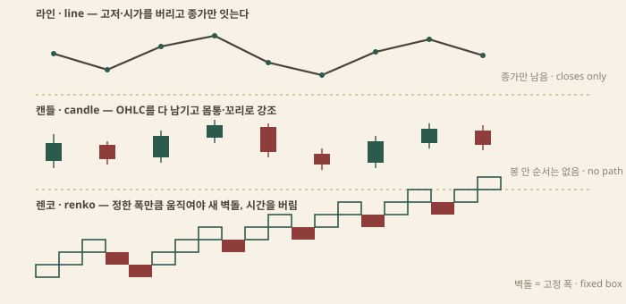
공통 한계가 둘 있다. 봉 안의 순서는 여전히 없다 — 고가가 먼저였는지 저가가 먼저였는지는 OHLC만으로 알 수 없다. 그리고 시간은 균등해도 활동량은 균등하지 않다 — 점심의 빈 봉과 지표 발표 직후의 봉이 같은 너비를 차지한다.
렌코2·카기3·P&F4는 시간을 버린다. 봉의 트리거가 시계가 아니라 가격 폭이다 — 정한 크기만큼 움직일 때만 새 칸이 그어지고, 미만의 움직임과 그 사이의 시간은 기록되지 않는다.
렌코는 벽돌이다. 벽돌 크기를 10포인트로 정하면 9포인트 움직임은 없던 일이고, 10포인트가 채워질 때 새 벽돌이 45도로 붙는다[4]. 벽돌 크기가 곧 필터 강도다.
카기는 두께가 있는 선이다. 가격이 직전 고점 위로 올라가면 선이 굵어지고(양), 직전 저점 아래로 내려가면 가늘어진다(음) — 어깨와 허리의 돌파가 신호다.
P&F는 상승을 X 열로, 하락을 O 열로 쌓는다. 필터는 두 겹이다 — 한 칸의 가격 크기(박스)와 반대 열로 넘어가는 데 필요한 칸수(전환, 고전은 3점 전환). 빅터 드빌리어스가 1933년에 체계화했고[3], 와이코프는 횡보 폭을 가로로 세는 카운트의 재료로 썼다 — 횡보의 칸수 × 박스 × 전환이 목표폭이다. 원인이 클수록 결과가 크다는 법칙의 계산이다(고전 이론).
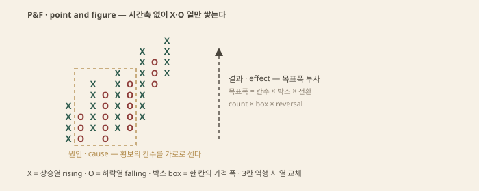
공통의 대가는 시간 감각이다. 며칠 걸린 움직임과 몇 분 걸린 움직임이 같은 칸을 차지하고, 차트가 조용한 동안에도 시계는 간다 — P&F 한 칸이 한 달의 횡보일 수 있다. 그리고 필터 매개변수가 곧 세계다 — 박스 크기를 바꾸면 같은 데이터가 다른 차트가 된다.
틱·볼륨·레인지 바5는 시계 시간을 버리고 활동량으로 봉을 자른다. 틱 바는 N 건의 체결마다, 볼륨 바는 N 주(계약)마다, 레인지 바는 정해진 고저 폭이 채워질 때마다 봉 하나를 닫는다.
얻는 것은 균등한 정보 밀도다. 활동이 몰리는 시간에는 봉이 빨리 쌓이고 한적한 시간에는 멈춘다 — 점심의 빈 봉 열 개가 봉 하나로 압축되고, 지표 발표의 한 시간이 수십 봉으로 팽창한다. 봉 하나가 같은 양의 일을 담으니 거래량 분석과 평균이 활동량 기준으로 재보정된다.
잃는 것은 달력 감각이다. 세션 경계가 축에서 지워지고 봉 사이에 흐른 실제 시간이 불균등해진다 — 아시아 장의 얇은 시간과 뉴욕 겹침이 같은 축을 쓴다. 데이터 의존도가 높다. 총거래량이 없는 현물 외환 같은 시장에서는 틱 수가 프록시로 들어가고, 프록시의 질이 곧 차트의 질이다.
하이킨아시6는 표시를 위해 봉을 다시 계산한다. HA종가는 봉의 OHLC 평균이고, HA시가는 직전 HA봉의 시가·종가 평균이며, HA고가·저가는 실제 고저와 HA시가·종가를 겨뤄 잡는다[5]. 평균을 거친 봉이 같은 색으로 연속하니 추세 구간이 매끄럽게 읽히고, 색이 바뀌는 지점이 조기 경고가 된다 — 추세 가독을 위한 필터다.
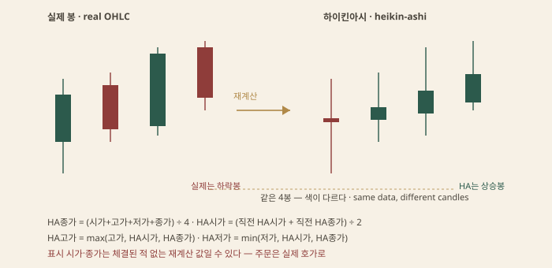
대가는 가격의 진위다. 화면의 시가·종가는 재계산 값이라 실제로 체결된 적 없는 숫자일 수 있다. HA봉의 종가를 주문 가격으로 써도 그 가격에는 호가가 없고, HA봉의 저가에 손절을 걸면 실제 저가가 깨지기 전에 빠져나간다.
같은 이유로 이 차트 위에 얹는 지표도 원본과 다른 값을 낸다 — 렌코 위의 이동평균은 렌코 값의 평균이지 원본 봉의 평균이 아니다. 필터 위의 필터는 원본 시계열로 돌려 검증한다.
TPO7와 볼륨 프로파일은 봉의 순서를 버리고 가격대별 빈도를 본다. 피터 스타이들마이어의 Market Profile은 30분 블록을 문자로 찍어 가격 눈금에 옆으로 쌓는다 — 가로축이 시간이 아니라 빈도다[6]. 가장 긴 행이 POC8(최다 체결 가격)이고, 전체 TPO의 약 70%를 덮는 띠가 가치영역9, 첫 두 블록(A·B, 첫 한 시간)의 폭이 이니셜 밸런스10다 — 당일 확장의 기준선이다. 읽는 문법은 경매시장이다 — 가격이 가치영역을 받아들이는지(회귀), 거부하는지(이탈)를 본다.
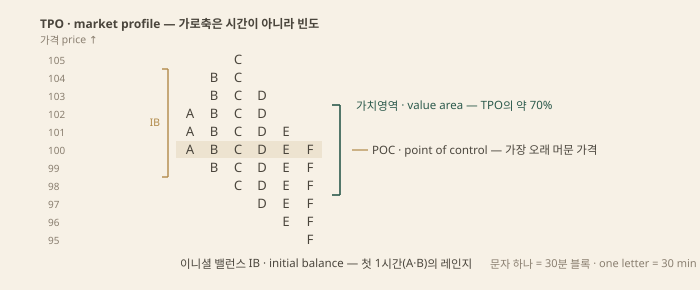
볼륨 프로파일은 같은 분포를 문자가 아니라 거래량으로 쌓은 형제다(보조지표). 풋프린트11는 반대 방향의 필터다 — 봉을 가격대별 매수·매도 체결로 쪼개 요약을 버리고 체결 자체를 본다. 오더플로의 영역이다(보충 영역).
한계는 순서의 상실과 데이터 의존이다. 분포는 어디서 거래됐는지는 보여도 무엇이 먼저였는지는 보이지 않는다. 그리고 프로파일은 먹이는 데이터를 따라간다 — 거래소별 집계와 세션 경계 설정에 따라 다른 그림이 나온다.
차트 고르기는 취향이 아니라 목적의 문제다. 하려는 판단이 필요로 하는 정보를 버리는 차트를 쓰면 안 된다 — 그게 전부다.
| 목적 | 차트 | 주의 |
|---|---|---|
| 큰 그림 · 지지저항 스캔 | 라인 · 상위프레임 캔들 | 당일 변동폭은 안 보인다 |
| 추세 가독 | 하이킨아시 · 렌코 | 주문·손절은 원본 차트로 |
| 정밀 타이밍 · 패턴 | 캔들 · 바, 필요하면 풋프린트 | 재계산 차트 위 패턴 금지 |
| 가치 영역 · 수용/거부 | TPO · 볼륨 프로파일 | 세션 경계·데이터 확인 |
| 목표가 계수 | P&F 카운트 | 박스·전환 값이 세계를 정한다 |
| 활동량 균등 | 틱 · 볼륨 · 레인지 바 | 거래량 없는 시장은 프록시 |
규칙은 하나로 모인다 — 필터를 켠 채로 버린 정보가 필요한 결정을 하지 않는다. 손절과 주문 가격, 세션 경계, 체결 순서가 필요한 판단은 원본 시계열 차트로 돌아가 확인한다.
에드워즈·메이기 계열의 형상 사전. 패턴은 예언이 아니라 확인과 무효화의 지리다. 그리고 반전 패턴의 첫 조건은 패턴 바깥에 있다 — 반전할 추세가 먼저 있어야 한다.
고전 패턴의 계보는 샤바커에서 시작된다. 리처드 샤바커가 1932년 Technical Analysis and Stock Market Profits에서 차트 형상을 처음 체계적으로 분류했고[1], 그 계보를 에드워즈와 메이기가 1948년 Technical Analysis of Stock Trends로 이어받아 오늘 읽히는 사전을 만들었다[2]. 머피의 종합서는 이 계열의 표준 요약이다[3].
이 사전의 첫 규칙은 패턴이 아니라 전제다. 반전 패턴은 뒤집을 추세가 있어야 성립한다 — 상승 추세가 없는 자리의 머리어깨 모양은 패턴이 아니라 출렁임이다. 지속 패턴도 같다 — 계속될 추세가 없으면 쉼표가 아니다. 같은 형상이 맥락에 따라 패턴이 되기도 하고 잡음이 되기도 한다.
그래서 패턴 이름은 조건 목록의 속기로 읽는다. 목록은 네 칸이다 — 선행 추세, 경계선(넥라인이나 추세선), 확인 사건(경계선의 돌파, 보통 종가 기준), 거래량 경향. 여기서 거래량은 봉 아래에 쌓인 시간별 거래량 막대다 — 가격대별 체결 분포를 보는 볼륨 프로파일과는 다른 도구다1. 넷 중 마지막은 참고 사항이고 첫 셋이 성립 조건이다.
한계는 목록의 주관성이다. 선행 추세가 얼마나 길어야 추세인지, 경계선 관통이 어느 폭까지 허용인지에 공인 규격이 없다 — 에드워즈·메이기가 제안한 이탈 완충(3% 규칙, 가격 구조)도 관행이지 법칙이 아니다. 패턴은 발견하는 것이 아니라 조건을 먼저 선언하고 대조하는 것이다.
헤드앤숄더는 상승 추세 끝의 세 고점이다 — 왼어깨, 더 높은 머리, 다시 낮아진 오른어깨. 두 어깨 사이의 저점을 잇는 선이 넥라인2이다. 형상이 보이는 순간 패턴이 완성되는 게 아니다 — 오른어깨에서 되밀린 가격이 넥라인 아래로 종가를 박을 때 비로소 패턴이다. 그전까지는 머리어깨 후보다. 역헤드앤숄더는 하락 추세 끝의 거울상이고 확인은 넥라인의 상향 돌파다[2].
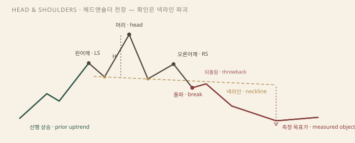
이중 천장·바닥은 같은 자리를 두 번 시험하는 형태다. 이중 천장은 두 번째 고점이 첫 고점 근처에서 거절되고, 두 고점 사이의 저점 — 이 형태의 넥라인 — 이 깨질 때 확인된다. 이중 바닥은 그 거울상으로, 같은 저점을 두 번 밟고 중간 고점을 위로 깰 때 완성된다. 삼중 천장·바닥은 시험이 한 번 더 반복된 같은 논리다 — 세 번 버틴 자리가 깨질 때의 무게는 더 크다.
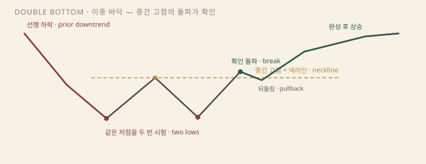
라운딩3은 모서리 없는 전환이다 — 천장이 서서히 아래로 기울거나(rounding top) 바닥이 오랫동안 둥글게 다져지는 형태(rounding bottom, saucer)다. 넥라인이 없어 완성 시점이 흐리다 — 대신 얻는 것은 전환의 시간적 무게다. 고전 해설은 거래량의 골격도 둔다 — 머리어깨 천장에서 거래량은 왼어깨에서 최대, 머리에서 줄고 오른어깨에서 마르는 배열이 교과서적이다. 한계는 대칭의 환상이다 — 어깨의 높이가 같을 필요는 없고 넥라인은 기울 수 있으며, 어깨가 여럿인 복합형도 같은 문법이다.
지속 패턴은 추세 중간의 정지다 — 앞의 이동이 빠르고 컸을수록 쉼표는 짧고 얕다. 깃발4은 깃대(급한 등락) 뒤에 추세 반대로 살짝 기운 작은 채널이고, 페넌트5는 깃대 뒤의 작은 대칭 삼각이다. 둘 다 쉼표 안에서 거래량이 마르고 돌파에서 다시 붙는다. 에드워즈·메이기는 "깃발은 돛대 중간에서 분다"고 적었다 — 쉼표 뒤의 이동이 깃대만큼 이어지는 경우가 잦다는 관찰이다[2].
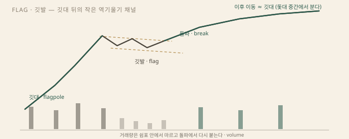
채널은 평행한 추세선 두 개의 통로다 — 되돌림이 반대편 선에서 멈추는 한 추세는 진행 중이고 통로 이탈이 경고다(가격 구조). 상승 삼각은 수평 저항 아래로 저점이 높아지는 압축이고, 하락 삼각은 수평 지지 위로 고점이 낮아지는 압축이다 — 기울기는 방향의 편향이지 약속이 아니다. 반대로 깨지는 표본이 어느 쪽에나 있다.
컵앤핸들6은 오닐의 성장주 패턴이다 — 오랜 상승 뒤의 둥근 조정(컵)과 오른쪽 가장자리의 얕은 되돌림(손잡이). 확인은 손잡이를 지나 선행 고점을 깨는 돌파다[4]. 이름은 미국 성장주 서사에서 왔지만 형상의 문법은 라운딩과 깃발의 조합이다. 지속 패턴의 한계는 정의에 내장돼 있다 — 쉼표가 반대로 깨지면 그것은 지속 패턴이 아니었던 것이다. 사후에 이름이 정해지는 형상이다.
대칭 삼각7은 낮아지는 고점과 높아지는 저점이 만나는 수렴이다. 방향의 형상이 아니라 압축의 형상이다 — 수렴이 좁아질수록 변동성은 줄고 돌파는 가까워지지만 어느 쪽인지는 패턴이 말해 주지 않는다. 깨지는 봉을 기다리는 것이 이 패턴의 사용법이고, 추세 쪽으로 조금 기운다는 통계가 있어도 그것은 기대이지 정의가 아니다.
확산형(메가폰)8은 대칭 삼각의 반대다 — 고점은 높아지고 저점은 낮아지며 변동성이 커진다. 에드워즈·메이기는 이 형상을 분산 국면, 통제를 잃은 시장으로 읽었다[2]. 양쪽 경계를 번갈아 넘는 가짜 돌파가 잦아 경계선 추종이 가장 비싼 대가를 치르는 형상이다. 직사각형은 수평 지지·저항의 상자다 — 상자 안의 왕복이 끝날 때까지 방향이 없다. 지속으로 끝나는 경우가 많지만 분산·매집 레인지로 반전이 되기도 한다 — 지속이기도 반전 직전이기도 한 양방향이다.
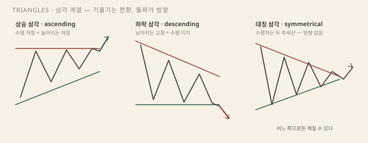
측정 법칙은 패턴의 높이를 돌파 지점에서 돌파 방향으로 투사하는 것이다. 머리어깨는 머리 정점에서 넥라인까지의 거리를 이탈점에서 아래로, 삼각과 직사각형은 초기 폭을 돌파선 너머로, 깃발은 깃대를 쉼표 끝에서 다시 세운다 — 고전 사전의 표준 산법이다[2]. 이 투사가 만드는 것이 측정 목표가9다.
목표가의 성격은 약속이 아니라 최소 기대치다. 벌코프스키의 표본은 기대치를 낮춘다 — 머리어깨 천장에서 측정 목표에 도달한 사례는 절반 남짓이다[5]. 그의 수정 산법은 높이에 패턴별 도달률을 곱해 목표를 당긴다. 목표가는 도착 예언이 아니라 손익비의 분모다 — 진입에서 무효화까지의 거리와 견주기 위한 눈금이다.
확인 돌파도 자주 실패한다 — 넥라인을 깬 가격이 되돌아와 선을 다시 넘는다. 고전 사전은 이를 되돌림10과 실패 사이의 회색 지대로 넘겼지만, 벌코프스키는 실패한 패턴(busted pattern)을 따로 표본으로 모았다 — 실패가 잦은 패턴일수록 실패 뒤의 반대 방향 이동이 컸다는 관찰이다[5]. 실패한 신호가 그 반대의 신호가 된다는 오래된 격언은 이 관찰의 다른 표현이다.
메커니즘은 익숙하다 — 경계선을 넘어 체결된 스톱과 돌파 주문을 받아 낸 반대편 물량이 더 크면 가격은 되밀린다. 가짜 돌파(false breakout)는 그 되밀림의 고전 이름이고, 와이코프의 스프링·업스러스트(고전 이론), SMC의 유동성 스윕(유동성 언어)과 같은 사건이다 — 이름은 넷이고 봉은 하나다. 실패의 정보 가치는 여기서 나온다 — 돌파를 추종한 물량이 물린 자리가 되밀림의 연료다.
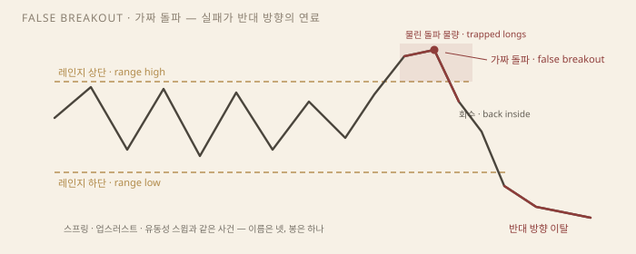
실패한 패턴도 조건 문장으로 쓴다. 조건 — 확인된 돌파가 패턴 안으로 회수된다. 시나리오 — 돌파 반대 방향으로 진입을 검토한다. 무효화 — 실패 돌파 꼬리의 끝. 꼬리 너머로 다시 나가면 실패 시나리오도 폐기다.
고전 패턴의 검증은 두 갈래로 갈라진다. 표본 통계 쪽의 대표가 벌코프스키다 — 수만 개의 실제 사례를 패턴별로 세어 실패율, 평균 이동 폭, 되돌림 빈도를 매겼다[5]. 그의 공헌은 형상의 목록이 아니라 목록에 숫자를 붙인 것이다 — 머리어깨의 평균 하락과 목표 도달률 같은 값이 그제야 비교 가능해졌다. 기계화 쪽의 대표는 로·마마이스키·왕이다 — 커널 회귀로 가격 경로를 평활해 머리어깨·이중 천장 등 열 개 패턴을 알고리즘으로 식별하고 조건부 수익률이 무작위와 다른지 검정해, 일부 패턴에서 유의한 정보가 잡혔다고 보고했다[6].
남는 문제는 식별의 주관이다. 아론슨의 지적대로 규칙으로 고정되지 않은 패턴은 검증이 서지 않고[7], 같은 차트에서 머리어깨를 읽는 사람과 삼중 천장을 읽는 사람이 갈린다. 사후의 차트는 친절하다 — 확정된 경계선 위에서는 모든 것이 패턴으로 보인다. 룩어헤드 편향(전제와 한계)과 같은 구멍이다. 방어는 선언이다 — 추세, 경계선, 확인 기준을 먼저 쓰고 그다음 형상에 이름을 붙인다.
형상 자체의 도감은 패턴 도감에 따로 모았다. 이 챕터의 사전은 형상이 아니라 형상의 조건과 실패를 읽는다.
사전 전체를 외우지 않는다. 위치(추세 말인가)와 다음 봉 확인이 본체다.
캔들 한 봉은 네 가격의 도식이다. 시가와 종가 사이가 몸통(real body)이고, 몸통 위아래로 고가·저가까지 뻗은 선이 꼬리(shadow)다. 몸통은 봉 안에서 힘이 낸 결과물이다 — 종가가 시가 위에서 닫히면 양봉, 아래면 음봉이다. 꼬리는 밀렸다가 되돌아온 범위, 한때 찍혔지만 지켜지지 못한 가격의 흔적이다. 긴 아랫꼬리는 아래로 밀린 물량이 흡수된 자국이고, 긴 윗꼬리는 위로 간 물량이 거부된 자국이다.
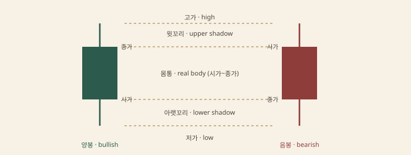
이 사전의 첫 문법은 위치가 이름을 결정한다는 것이다. 긴 아랫꼬리의 작은 몸통은 형상이 같아도 하락 말에 서면 해머1, 상승 말에 서면 교수형2이다. 긴 윗꼬리 버전도 마찬가지다 — 상승 말이면 슈팅스타, 하락 말이면 역해머다3. 봉의 형상은 같고 선행 추세가 다를 뿐인데 이름과 읽기가 갈린다. 모양은 위치 없이 신호가 아니다.
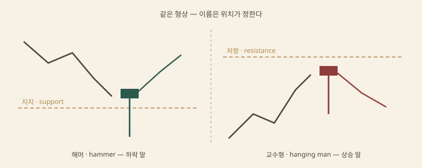
읽는 순서는 세 칸이다. 선행 추세의 위치를 확인하고, 봉의 형상을 읽고, 다음 봉이 몸통 방향으로 이어가는지 본다. 니슨이 서구에 소개한 이 체계에서 확인은 선택이 아니라 정의의 일부다[1].
도지4는 시가와 종가가 같거나 거의 같은 봉, 균형의 십자다. 꼬리 배열이 변형을 만든다 — 양쪽 꼬리가 길면 장십자, 아랫꼬리만 길면 잠자리, 윗꼬리만 길면 비석지다. 도지 자체는 중립이고 추세 말에서 무게를 얻는다. 특히 상승 말의 도지는 매수 측 추진력 상실의 경고로 읽는다[1].
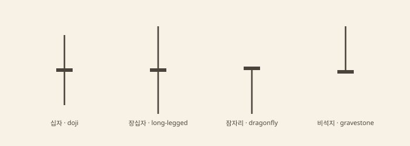
해머의 조건은 관행적으로 이렇게 잡는다 — 몸통이 작고 아랫꼬리가 몸통의 두세 배 이상이며 윗꼬리는 거의 없다. 전제는 앞에 놓인 하락 추세다. 메커니즘은 흡수다 — 장중 깊이 밀린 가격이 종가까지 회수됐다는 건 그 가격대의 매도를 받아 낸 매수가 있었다는 뜻이다. 확인은 다음 봉이다. 종가가 해머 몸통 위로 올라서면 시나리오가 열리고, 무효화는 꼬리의 끝이다. 같은 모양이 상승 말에 나오면 교수형이고, 경고로 읽되 하방 확인을 요구한다.
슈팅스타는 그 거울이다 — 상승 말의 작은 몸통과 긴 윗꼬리, 위로 간 가격이 되밀린 거부다. 하락 말의 같은 형상인 역해머는 반전 후보로 약한 편이다. 저가권의 윗꼬리는 약한 회복 시도로도 읽혀 확인 요구가 더 크다.
마루보즈5는 꼬리 없는 장몸통이다. 백마루보즈는 저가에 열어 고가에 닫은 봉이다 — 한쪽이 장중 내내 밀어붙인 결과다. 반전이 아니라 지속 신호에 가깝고, 몸통의 절반이 이후 되돌림의 눈금으로 쓰인다. 핀바6는 해머 계열의 서양 이름(Pinocchio bar)이다 — 같은 꼬리와 위치 논리를 다른 어휘로 부른 것이니 따로 외울 대상이 아니다.
왜 모양보다 위치인가는 판정 비용 때문이다. 추세 말이 아닌 자리의 해머는 그냥 꼬리 긴 봉이고, 이름 없는 꼬리 긴 봉도 지지대 위의 회수라면 읽을 가치가 있다. 이름 붙이기보다 자리 확인이 먼저다. 한계는 관행성이다 — 꼬리가 몸통의 몇 배여야 하는지, 추세 말이 몇 봉 앞까지인지에 공인 규격이 없어 같은 봉이 사람마다 다른 이름을 얻는다.
장악형7은 둘째 봉의 몸통이 첫째 봉의 몸통을 완전히 덮는 구조다. 하락 말의 음봉 다음에 그보다 큰 양봉이 덮으면 상승 장악 — 세력 역전이 한 봉 안에 드러난다. 꼬리까지 덮어야 하는지는 문서마다 갈리고 몸통 기준이 표준이다[5]. 확인은 장악 봉의 종가가 지켜지는 것이고, 무효화는 장악 봉의 반대쪽 끝이다.
하라미8는 반대 방향이다. 둘째 몸통이 첫째 몸통 안에 들어앉는다 — 옛 일본어로 임신이라는 뜻이다. 서양의 인사이드바와 같은 구조인데, 인사이드바는 몸통이 아니라 봉 전체(고가·저가)가 안에 들 때 붙는 이름이라 기준이 다르고 읽기는 같다. 의미는 모멘텀 소강 — 크게 밀던 쪽이 멈췄다. 작은 몸통이 도지면 하라미 크로스다.
관통형9은 절반 규칙을 쓴다. 하락 말에 양봉이 앞 음봉 몸통의 절반을 넘겨 닫으면 관통형, 상승 말에 음봉이 앞 양봉의 절반 아래로 닫으면 흑운형이다. 절반을 못 넘으면 신호가 아니라는 뚜렷한 조건이 있어 판정이 쉽다. 트위저10는 두 봉 이상의 고점(트위저 탑)이나 저점(트위저 바텀)이 일치하는 구조 — 같은 가격의 반복된 거부다. 이중천장·이중바닥을 봉 단위로 축소한 것과 같다.
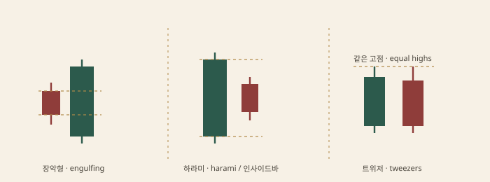
한계는 공통이다. 두 봉의 관계는 선명하게 보이는 데 그 관계가 반전으로 이어질지는 위치가 정한다 — 레인지 한가운데의 장악형은 의미가 얇다.
모닝스타11는 3막 구조다. 하락 말에 긴 음봉, 그 아래 작은 몸통(이상적으로는 갭을 동반한 소봉 — 별), 그리고 첫째 음봉 몸통의 절반 위로 회수하는 긴 양봉. 가속, 정지, 역전의 순서가 세 봉에 걸쳐 나온다. 가운데 별이 도지면 모닝 도지 스타로 더 강한 형태로 친다. 상승 말의 대칭이 이브닝스타다.
삼병12은 같은 색 긴 봉 셋의 연속이다. 상승삼병(three white soldiers)은 세 양봉이 각각 전봉 몸통 안에서 열리고 종가가 순차로 높아지는 구조 — 추진력의 지속이다. 하락 버전은 세 마리 까마귀(three black crows)다. 바닥 초기의 삼병은 전환 확인으로 읽히지만 이미 크게 진행된 추세 말의 삼병은 오히려 소진 경고가 된다 — 같은 셋도 위치가 읽기를 갈라 놓는다.
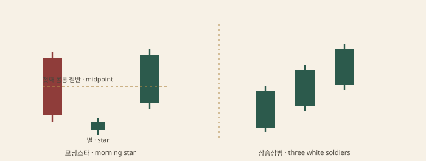
3봉 조합의 실용은 확인이 늦는 대신 구조가 분명하다는 데 있다 — 별의 회수가 끝난 뒤에 열리는 시나리오라 무효화 자리(별의 저점)가 잘 잡힌다.
캔들 패턴의 계보는 서구보다 오래됐다. 18세기 사카타(현 야마가타현)의 쌀 상인 혼마 무네히사(本間宗久)의 매매 기록이 전승 문서로 남았고[3], 사카타 오법13은 그 전통을 다섯 패턴군으로 묶은 이름이다. 영어권 소개는 니슨의 두 번째 책 Beyond Candlesticks(1994)가 맡았다[2].
| 사카타 오법 | 구조 | 서양 대응 |
|---|---|---|
| 삼산(三山) | 세 번의 고점 | 트리플 탑, 머리어깨 |
| 삼천(三川) | 세 번의 시험이 방향을 트는 전환군 | 삼중바닥, 세 번째 테스트 |
| 삼공(三空) | 연속 세 갭 뒤 소진 | 갭 이론, 소진 갭 |
| 삼병(三兵) | 같은 색 긴 봉 셋 | 상승삼병 · 세 마리 까마귀 |
| 삼법(三法) | 긴 봉 안의 작은 조정 뒤 재돌파 | 깃발 등 지속형 |
삼산은 머리어깨에, 삼공은 갭에 가깝다 — 캔들 사전의 반쪽이 서양 차트 패턴을 다른 언어로 다시 쓴 것이다. 둘은 경쟁 체계가 아니라 같은 형태의 이중 명명이다. 삼천은 문서마다 범위가 갈리는 유일한 칸이라 느슨한 대응으로 둔다.
이름 있는 캔들이 단독으로 벌어 주는 것은 얇다. 벌코우스키는 수만 개 표본에 각 패턴의 반전·지속 성공률을 매겼는데, 상당수의 유명 패턴이 절반 언저리의 반전율에 머물렀다[4]. 마셜·영·로즈는 다우지수 구성종목 일봉에 캔들 규칙을 대입해 매수 신호가 가치를 더하지 못한다고 보고했다[6]. 통계는 같은 결론으로 모인다 — 봉 하나는 정보가 아니라 위치 위의 트리거다.
쓰임은 한 줄로 압축된다 — 구조와 레벨 위에서만 본다. 지지·저항, 추세 말, 유동성 스윕 자리에서 캔들은 진입의 트리거로 값을 하고, 아무 자리의 이름 있는 봉은 그냥 봉이다. 조건(레벨과 위치)이 서면 시나리오를 열고, 무효화는 패턴의 극단(꼬리 끝, 첫째 봉의 반대쪽)에 둔다. 사전 전체를 외우는 비용보다 자리를 보는 습관 쪽에 값이 있다.
모양만 외우지 말고, 선행 추세와 실패 조건을 같이 본다.
넥라인 하향. 실패는 넥라인 재탈환.
중간 고점 파괴가 확인. W자.
수평 저항 + 높아지는 저점. 양방향일 수 있음.
급등 뒤 기울어진 소채널. 지속 후보.
고점은 높고 저점은 낮아짐. 통제 실패.
위치 없는 모양은 그냥 봉이다.
하단을 깨고 즉시 회수. 와이코프와 SMC가 만남.
첫째 봉과 셋째 봉이 겹치지 않는 빈 구간.
도감의 카드 한 장은 문장 하나의 약자다. "넥라인 하향. 실패는 넥라인 재탈환" 두 줄 안에 네 절이 압축돼 있다 — 이 형상이 무엇을 돌리는가, 완성을 선언하는 선은 어디인가, 무엇이 확인인가, 어디서 틀렸다고 하는가. 모양만 외우는 읽기가 실패하는 이유는 형상이 단독으로는 아무것도 주장하지 않기 때문이다. Edwards와 Magee의 반전 패턴 정의는 "돌릴 추세가 있어야 반전이다"에서 시작한다[1]. 선행 추세가 없는 세 고점은 머리어깨가 아니라 출렁임이다.
읽는 순서는 네 칸이다.
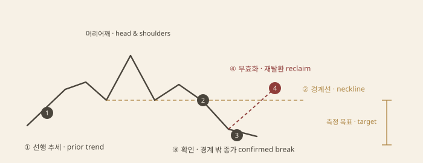
확인의 정의가 먼저다. Edwards와 Magee는 돌파의 상당수가 경계선으로 되돌아오는 풀백·스로백6을 동반한다고 적었다[1]. 되돌림까지 기다릴지 첫 이탈에 들어갈지는 규칙의 문제지 그림의 문제가 아니다. 무효화 칸이 있어야 실패를 부를 수 있다 — 카드가 "넥라인 재탈환"을 따로 적는 것은 그 때문이다. 무효화 없는 읽기는 시나리오가 아니라 점술이다.
헤드앤숄더의 구조는 좌어깨·머리·우어깨다. 가운데 고점이 가장 높고, 두 반응 저점을 잇는 선이 넥라인이다. 선행 조건은 상승 추세 — 돌릴 것이 있어야 한다. 확인은 넥라인을 종가로 하향 이탈하는 것이고, 실패는 카드가 적은 대로 이탈한 가격이 다시 넥라인 위로 올라서는 재탈환이다. 거래량의 고전적 배열은 좌어깨에서 가장 크고 우어깨에서 마르는 것이다[1]. 측정 법칙7으로는 머리꼭지에서 넥라인까지의 높이를 이탈점 아래로 옮긴다. Bulkowski의 표본 집계에서 목표 도달률은 규칙이 암시하는 만큼 높지 않다[2] — 목표는 예언이 아니라 참고 눈금이다.
이중 바닥2은 같은 높이의 저점 둘과 사이의 반응 고점으로 이뤄진 W자다. 선행 조건은 하락 추세고, 확인은 중간 고점의 파괴다. 카드의 "중간 고점 파괴가 확인"이 그 말이다 — 두 번째 저점이 섰다고 완성이 아니다. 아직 세 번째 저점으로 내려갈 수 있는 출렁임이고, 반응 고점이 깨질 때 비로소 형상이 문장이 된다. 실패는 둘이다. 돌파 후 다시 저점대로 밀리는 것과 중간 고점 돌파 없이 두 번째 저점이 무너지는 것. Bulkowski의 수치에서도 확인 전 진입의 실패율은 확인 후보다 훨씬 높다[2].
상승 삼각3은 수평 저항과 높아지는 저점이 수렴하는 형상이다. 같은 가격에 매도 물량이 걸려 있는데 매수는 저점을 계속 높이는 그림이다. 고전 독법은 상방 우위지만 카드가 적은 대로 이탈은 양방향이다 — 수평선이든 저점 추세선이든 깨지는 쪽이 방향이고, 확정 전에 방향을 미리 적는 것은 예언이다. 확인은 경계의 종가 이탈, 실패는 이탈 직후 삼각 안으로 복귀하는 가짜 돌파다.
깃발4은 급등이나 급락(깃대) 뒤 추세 반대로 기울어진 좁은 채널이다. 지속 후보 — 조정이 얕고 거래량이 마른 채 채널 상단이 다시 깨지면 추세가 재개된다는 고전 독법이다[1]. 확인은 채널 상단 이탈이고, 실패는 채널 하단 이탈 또는 깃대의 상당 부분을 되돌리는 깊은 조정이다. 조정이 깃대를 거의 다 먹으면 지속이 아니라 레인지다.
확산형은 수렴의 반대다 — 고점은 높아지고 저점은 낮아진다. 양쪽 경계가 계속 멀어지므로 돌파의 정의 자체가 흔들리고 가짜 돌파가 잦다. 고전 도감에서는 통제 실패의 형상, 분산 말기의 그림자로 읽는다[1]. 실용은 진입보다 회피 신호에 가깝다 — 이 형상 안에서는 다른 패턴의 확인 기준도 신뢰가 떨어진다.
"위치 없는 모양은 그냥 봉이다"가 이 카드들의 전제다. 해머는 긴 아래꼬리와 작은 몸통인데, 같은 형상이 상승 추세 말에 나오면 교수형으로 이름이 바뀐다 — 캔들 챕터의 문법 그대로다. 장악형5은 둘째 봉 몸통이 첫째 몸통을 삼키는 2봉 구성이고 하락 말의 상승 장악이 반전 후보다. Nison의 규약에서 캔들 신호는 서구식 확인(존, 추세선, 다음 봉)과 겹칠 때만 무게가 실린다[3]. 확인은 다음 봉의 방향이고 무효화는 꼬리나 몸통의 끝이다.
스프링=스윕은 레인지 하단을 깨고 즉시 회수하는 사건이다. 와이코프의 스프링, SMC의 유동성 스윕, 고전의 가짜 돌파가 같은 봉을 가리키는 세 이름이다[4]. 카드의 빨간 점은 스톱이 찔린 자리다. 확인은 레인지 안으로 닫히는 복귀 봉이고 무효화는 꼬리 끝이다 — 꼬리 너머로 다시 이탈하면 스윕이 아니라 진행 중인 돌파다. 국면 문맥은 고전 이론, 언어 문맥은 유동성 언어에 있다.
FVG는 세 봉에서 첫째 봉의 고가와 셋째 봉의 저가가 겹치지 않아 남는 빈 구간이다. 변위의 흔적이고 고전 어휘로는 갭이다[5]. 쓰임은 재방문 — 가격이 되돌아와 빈 구간을 채우는지, 존처럼 반응하는지를 본다. 모든 갭이 메워지는 것은 아니므로 "갭은 메워진다"라는 격언은 검증이 필요한 주장이다.
새 이름의 형상은 계속 돌아온다. 도감에 추가할지는 1절의 네 칸을 채울 수 있는가로 판별한다.
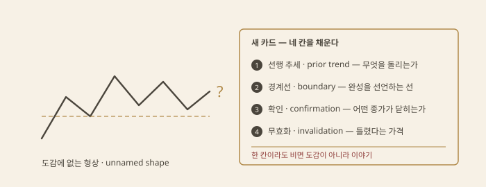
네 칸을 채운 뒤에도 두 관문이 남는다. 첫째는 색인 검색 — 새 이름은 대개 기존 카드의 부분 조합이다. 복합 머리어깨, 삼각 변종, 갭의 다른 이름이면 새 항목이 아니라 기존 항목의 별칭이다. 둘째는 표본 — Bulkowski의 방식대로 확인 성공률과 목표 도달률을 스스로 세어 본다[2]. 이름은 셀 수 있게 된 뒤에 도감에 들어간다.
도감 카드 여덟 장 중 넷이 다른 챕터에 중복으로 산다. 헤드앤숄더와 확산형은 고전 패턴의 도감 항목이고, 해머·장악은 캔들의 문법이며, 스프링은 와이코프의 매집 이벤트, FVG는 SMC의 불균형이다. 이 챕터는 새 층이 아니라 색인 — 같은 형상이 몇 층의 이름을 가지는지 한 장에 모은 목록이다.
이름을 고르는 기준은 물을 질문이다. 같은 하단 이탈·회수 봉을 와이코프로 읽으면 매집 말의 테스트가 되고 — 국면이 문제다. SMC로 읽으면 스톱 군집 소화가 되고 — 유동성이 문제다. 고전으로 읽으면 가짜 돌파가 되고 — 경계선이 문제다. 봉은 하나고 프레임이 셋이다. 프레임이 바뀌면 앞에 붙는 문맥이 바뀔 뿐 확인과 무효화는 같다.
도감 읽기 공통의 한계는 식별의 주관성이다. 같은 차트에서 사람마다 다른 패턴을 읽고, Bulkowski조차 판정 규칙을 먼저 고정해야 집계가 됐다[2]. 확인 봉이 닫히기 전 모든 패턴은 미완성이고, 실패한 형상은 도감에서 빠진 채 성공 사례만 남는 확증편향의 재료다. 도감은 예언서가 아니라 의심 목록이다.
피보나치는 과학이 아니라 많이 쓰이는 격자다. 같은 스윙에 여러 격자를 겹치면 확인이 아니라 중복이다.
피보나치 수열1은 레오나르도 피사노가 Liber Abaci(1202)의 토끼 번식 문제로 서구에 소개한 수열이다 — 각 항이 앞 두 항의 합(1, 1, 2, 3, 5, 8, 13, 21…). 인접 항의 비는 0.618로 수렴하고 그 역수는 1.618이며, 이 극한이 황금비2 φ다.
차트에 올라온 경로는 엘리엇 파동이다 — "3파는 1파의 1.618배가 흔하다" 같은 파동 관계식이 비율을 분석 언어로 만들었고, 프렉터는 이 비를 자연의 법칙이 시장에 나타난 것으로까지 밀었다[1]. 되돌림·팬·아크·타임존의 표준 도구 세트는 머피의 교과서를 통해 널리 퍼졌다[2].
논쟁은 두 갈래다. 자연법칙 진영은 식물의 나선과 성장 비율을 든다 — 시장의 군중 행동도 자연의 일부라는 주장이다. 반대쪽은 관찰의 문제를 든다 — 눈금이 조밀하면 어떤 반전도 어떤 눈금 근처에 있고, "근처"의 허용 폭을 넓히면 명중률은 원하는 대로 만들어진다. 실무의 자리는 셋째다 — 유래가 우주의 법칙이든 관용이든, 이 격자는 널리 공유된 눈금이다. 많이 보는 눈금은 주문이 모일 후보 자리를 준다. 그것이 이 도구의 전부이자 한계다.
되돌림3은 직전 스윙 안쪽에서 얼마나 되돌렸는가를 재는 눈금이다. 눈금마다 출처가 다르다 — 수열의 비에서 온 것과 관용에서 온 것을 섞어 쓰므로 표로 분리한다.
| 눈금 | 출처 | 쓰임 |
|---|---|---|
| 23.6 | 수열 — 세 칸 뒤 항과의 비(8/34) | 얕은 조정 |
| 38.2 | 수열 — 0.618², 두 칸 뒤 비(13/34) | 표준 조정 상단 |
| 50 | 관용 — 다우의 1/3~2/3, 간의 절반[3] | 가장 많이 보는 눈금, 수열 아님 |
| 61.8 | 수열 — 1/φ | 황금 되돌림 |
| 78.6 | √0.618 | 깊은 조정 |
| 88.6 | √0.786 | 극단 — 하모닉 Bat의 D[5] |
| 127.2 | √1.618 | 확장 |
| 161.8 | φ | 확장의 표준 눈금 |
| 200 | 관용 — 두 배 | 측정 이동 |
| 261.8 | φ² | 극단 확장 |
확장(extension)은 스윙 끝 너머의 목표폭이고, 투사(projection)는 A→B→C 세 점으로 두 번째 파동을 재는 계산이다 — AB=CD는 100% 투사다. 같은 수열을 다른 축에 펼친 변형도 있다. 팬(fan)은 되돌림 비율의 각도로 부채꼴을 열고, 아크(arc)는 반원 호로 같은 눈금을 굽히며, 타임존4(time zone)은 기저점에서 수열 간격으로 세로선을 세운다. 비율 간격으로 평행선을 긋는 피보 채널까지 포함해, 축이 달라도 눈금의 출처는 같다.
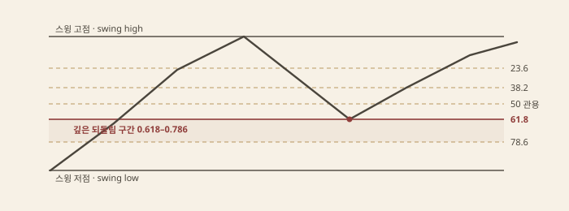
실전 쓰임은 위치다 — 되돌림 존에서 반응이 나오는지를 보고, 무효화는 스윙의 원단 또는 다음 눈금으로 잡는다. 한계는 앵커 선택이다 — 스윙의 양끝을 어디로 잡느냐에 따라 눈금 전체가 이동하고, 꼬리까지 잡을지 몸통까지 잡을지에 공인 규격이 없다.
같은 스윙을 재는 도구끼리는 같은 답을 낸다. 피보의 0.618~0.786 되돌림, ICT의 OTE(0.62~0.79, 유동성 언어), 하모닉 PRZ5(0.786의 XA 되돌림 × 1.27~1.618의 BC 확장 × AB=CD 투사, 하모닉)은 모두 같은 두 앵커 — 스윙 고저 — 에서 파생된 비율이다. 셋이 같은 자리를 가리키는 것은 세 번의 확인이 아니라 한 번의 계산이다.
컨플루언스가 성립하려면 독립 계측이어야 한다 — 다른 데이터, 다른 논리로 같은 자리를 가리킬 때다. 같은 스윙의 되돌림과 확장은 데이터를 공유한다. 눈금이 조밀할수록 문제는 커진다 — 되돌림 여섯 개, 확장 네 개, 피벗 다섯 개를 얹으면 가격이 눈금 근처에 있지 않을 방법이 없다. 모든 자리가 레벨이면 아무 자리도 레벨이 아니다.
방어는 세 가지다. 한 스윙에는 격자 하나만 얹는다. 나머지 근거는 다른 데이터 — 거래량, 시간, 구조 — 에서 가져온다. 무효화 가격은 격자와 무관하게 먼저 정한다. 순서를 바꾸면 격자가 근거를 생산한다.
피벗 포인트6는 전 세션의 고가·저가·종가로 짜는 당일 격자다 — 플로어 트레이더가 개장 전에 지지·저항 후보를 계산한 도구다. 표준(Floor)은 P=(H+L+C)/3이 중심이고 R1=2P−L, S1=2P−H, R2=P+(H−L), S2=P−(H−L)로 퍼진다. Woodie는 종가를 두 번 세어 P=(H+L+2C)/4로 최근가에 무게를 준다[2].
카마리야7는 다른 계보다 — 종가를 중심으로 고저폭의 1.1/k 배만큼 떨어진 여덟 개 레벨로, H3과 L3 사이를 회귀 구간, H4와 L4 이탈을 돌파 구간으로 읽는다. 1989년 Nick Stott이 고안한 것으로 전해지고 1.1 계수의 유래는 불명이다 — 관용이 굳어진 눈금이다.
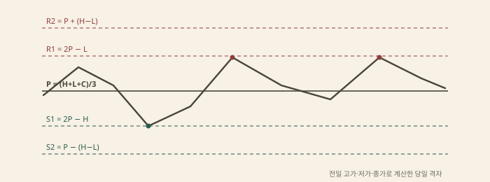
용도는 당일 기준선이다 — 레벨의 첫 터치에서 반응을 보고, 다음 레벨이 목표 후보다. 한계는 전일 범위에 갇힌다는 점이다 — 갭이나 추세일에는 격자 전체가 엉뚱한 곳에 놓이고, 회귀 논리의 카마리야가 추세일에 가장 자주 깨진다.
앤드루스 피치포크8는 세 피벗의 채널이다 — 기저 피벗(P0)에서 반대편 두 반전점(P1, P2)의 중점을 지나는 중앙값선을 긋고, P1과 P2에서 평행선을 뽑는다. 앨런 앤드루스의 Action–Reaction 코스가 원전이고[2], 가격이 중앙값선으로 돌아가려 한다는 회귀 가정이 도구의 명제다. 앵커를 선분의 중점으로 옮긴 Schiff 변형이 있다.
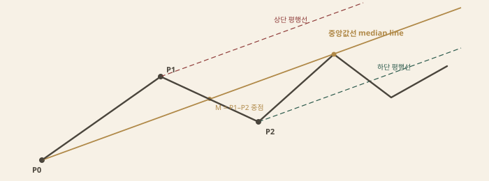
간 각도9는 시간 1단위당 가격 k로 긋는 팬이다 — 1x1이 균형각이고 그 위에 2x1·4x1, 아래에 1x2·1x4를 펼친다. 문제는 스케일이다 — "가격 1단위"를 무엇으로 정하느냐에 각도 전체가 종속되고, 축을 바꾸면 같은 선이 다른 각도로 그어진다(고전 이론 그림 4).
기울어진 격자의 공통 한계가 여기 있다 — 수평 격자는 가격 하나만 묻지만 기울어진 격자는 가격×시간의 단위 정의까지 묻는다. 앵커 셋에 스케일 하나, 자유도가 네 개다. 쓸 수 있는 형태로 남기려면 — 앵커는 명백한 피벗으로 고정하고, 중앙값선 도달을 반응 후보로 보며, 평행선 이탈을 무효화로 쓴다. 회귀 주장 자체는 경험칙이지 법칙이 아니다.
투사의 다른 계보는 닫힌 구조를 재서 목표폭을 만든다. 일목 가격론10은 A→B 상승과 B→C 조정의 세 점에서 네 계산치를 낸다 — E=B+(B−A), N=C+(B−A), V=B+(B−C), NT=C+(C−A)/2[6]. 같은 폭의 두 번째 파동(E·N)은 AB=CD의 친척이고, 조정분을 되돌린 V와 절반 되돌림의 NT가 그 변주다.
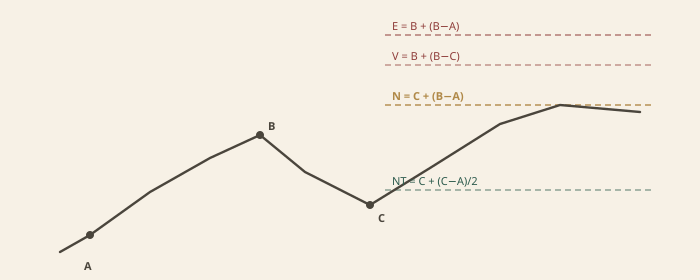
와이코프의 P&F 카운트11는 가로로 잰다 — 매집·분산 레인지의 열 수를 세어 박스 크기와 전환 폭을 곱하고, 그 폭을 레인지 끝에서 추세 방향으로 옮긴다[7]. 원인(횡보의 폭)이 결과(목표폭)를 정한다는 법칙의 계산이다(차트 유형 그림 2). 고전 패턴의 측정 법칙은 세로로 잰다 — 헤드앤숄더의 머리~넥라인 높이를 돌파점에서 옮긴다(고전 패턴)[3].
세 도구의 공통 문법은 하나다 — 닫힌 구조의 길이를 돌파 방향으로 옮겨 최소 기대치를 만든다. 차이는 재는 방향이다 — 일목은 파동의 폭, P&F는 횡보의 폭, 패턴은 형상의 높이다. 공통 한계도 있다 — 목표는 약속이 아니라 기대치고, 앵커(레인지의 시작과 끝, 넥라인의 기울기)가 움직이면 목표도 움직인다.
대규모 백테스트에서 38/50/62가 다른 비율보다 특별하지 않다는 보고가 있다 — 되돌림이 멈춘 가격대의 분포를 재면 피보 눈금에 유의한 집중이 나오지 않는다는 취지다. 수열을 시장에 대입하는 발상 자체를 Aronson은 주관적 검증이 불가능한 도구의 대표 사례로 든다 — 눈금이 많고 허용 폭이 자의적이면 어떤 과거도 설명되고, 설명되지 않는 과거를 찾기가 더 어렵다[8]. 규칙을 많이 시험할수록 우연한 명중이 쌓이는 다중비교의 구멍과 같다.
반대편 실증도 있다 — 주문은 지지·저항 부근과 라운드 넘버에 실제로 군집하고, 그 군집이 소화되며 가격이 반응한다[9]. 그래도 시장이 모이면 반응할 수는 있다 — 다만 반응의 원인은 비율의 신비가 아니라 그 자리에 모인 주문이다. 널리 보는 눈금일수록 후보 자리로서의 값은 있다.
남는 쓸모는 기하다 — 진입 근처에 눈금이 있으면 무효화 가격이 정해지고 손익비가 계산되며, "여기서 틀리면 나간다"가 숫자가 된다. 비율이 맞아서가 아니라 리스크를 정의할 수 있어서 쓰는 도구다.
다섯 스윙 점 X-A-B-C-D와 피보 격자의 정렬. 완성점 D 근처에서 비율들이 겹치는 띠가 PRZ다. 격자만 잔뜩 그리면 어디에든 반전 구간이 생긴다 — 그래서 이 체계의 문제는 예언이 아니라 조건과 무효화다.
하모닉의 첫 형상은 비율 없이 왔다. 가르틀리(H. M. Gartley)가 1935년 Profits in the Stock Market의 221~222쪽에 소개한 다섯 점 형상이 원형이다 — 큰 파동과 그 안의 되돌림 한 쌍으로 이뤄진 가격 경로라는 기술뿐, 피보나치 수치는 없었다[1]. 각 다리에 되돌림·확장 비율을 입힌 것은 페사벤토(Larry Pesavento)의 계열이고[2], 형상들에 이름을 붙여 도감으로 묶은 것은 카니(Scott Carney)다 — 그가 1990년대에 "하모닉 트레이딩"을 명명했고, 원전의 쪽수를 따 "가르틀리 222"라는 별칭도 붙었다[3][6].
체계의 뼈대는 패턴 도감이 아니라 네 점짜리 대칭 하나다. AB=CD1는 AB 파동 뒤 되돌림인 BC, 그리고 AB와 같은 크기의 CD가 이어지는 형상이다 — 측정 이동(measured move)이다. 비율 표기 규약2은 간단하다 — "BC=0.618"은 되돌림 다리가 선행 다리의 61.8%라는 뜻이고, 1을 넘는 수는 확장이다. 이상적인 형태는 시간까지 대칭이지만 가격 대칭만으로도 성립으로 쳐 준다.
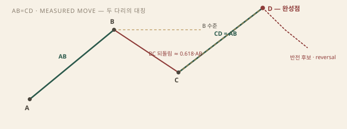
이 대칭 주장은 낯설지 않다 — 고전 패턴의 측정 법칙, 깃발의 깃대 투사와 같은 계열의 발상이다. 차이는 정밀함의 모양이다. 고전은 "높이만큼 간다"라는 관찰로 끝냈고, 하모닉은 그 자리에 소수 눈금을 걸었다. 대칭이 시장의 의무가 아니라는 한계는 같다 — 같은 폭의 반복은 법칙이 아니라 경향 관찰이다.
XABCD3는 다섯 스윙 점의 골격이다. X는 원점, XA가 첫 파동이고 B는 XA의 되돌림, C는 AB의 되돌림, D는 완성점이다. 상승형은 M, 하락형은 W로 읽히는데, 이 형상 자체는 고전 도감의 이중 천장·바닥이나 머리어깨와 겹친다. 하모닉이 더하는 것은 눈금이다 — 각 다리가 어느 비율에 서는지로 이름이 갈린다.
D는 점이 아니라 구간으로 다룬다. 완성점 근처에는 서로 다른 격자의 투사가 모인다 — XA의 되돌림 또는 확장, BC의 확장, AB=CD의 완성. 셋이 같은 가격대를 가리킬 때 그 띠를 PRZ4라 부른다 — 잠재 반전 구간(Potential Reversal Zone), 카니의 용어다[3]. 주장의 구조는 이렇다 — 겹침 자체가 반전의 근거라는 것이다. 독립된 눈금 여럿이 한 자리를 가리키면 그 자리에서 반응이 나올 확률이 높다는 가설이다.
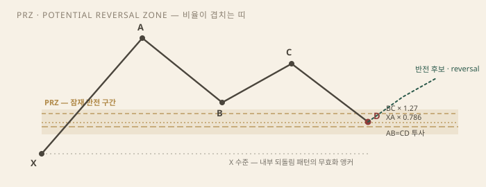
구간으로 쓰는 것은 점으로 쓰는 것보다 정직한 수정이다 — 0.786에 핀을 꽂는 정밀함은 실제 체결과 무관한 자릿수다. 다만 겹침이 근거라는 주장에는 함정이 있다 — 겹침은 그리는 쪽에서 만든다. 피보 눈금은 조밀하다. 되돌림 일곱에 확장 다섯을 얹으면 어느 가격대든 눈금 하나는 걸리고, 투사를 세 개 겹치면 어딘가에는 반드시 "구간"이 생긴다. PRZ의 실용은 예측이 아니라 다른 데 있다 — 진입과 무효화의 폭을 미리 정해 주는 띠라는 점이다.
도감의 패턴들은 같은 문법을 공유한다 — 다섯 점, 되돌림 두 번, 완성점 D. 갈리는 것은 눈금뿐이다. B가 XA의 어디에 서고 D가 XA의 어디에서 완성되는가.
| 패턴 | B of XA | D of XA | 성격 |
|---|---|---|---|
| Gartley | 0.618 | 0.786 | 원형. 내부 되돌림 |
| Bat | 0.382–0.50 | 0.886 | 얕은 B·깊은 D — X까지 거리가 짧아 스톱이 비교적 짧음 |
| Butterfly | 0.786 | 1.272 | D가 X 밖 — 구조 밖 확장 |
| Crab | 0.382–0.618 | 1.618 | 극단 확장, PRZ가 좁고 날카로움 |
| Shark | M/W 틀 밖 | 0.886–1.13 | 날카로운 반작용, 짧은 관리 |
가르틀리는 원형이다 — B가 0.618에 서고 D가 0.786에서 완성되는 내부 되돌림으로, D는 X를 넘지 않는다. 배트(Bat)는 카니가 2000년대 초에 정리한 변형이다 — B는 얕고(0.382~0.50) D는 깊다(0.886). D가 X 바로 앞에서 완성되므로 무효화까지의 거리가 가장 짧은 패턴이다. 버터플라이(Butterfly)는 길모어(Bryce Gilmore) 계열에서 와 카니가 정리했다 — D가 1.272 확장으로 X를 넘는다. X 안쪽의 되돌림이 아니라 추세 연장 끝의 클라이맥스를 노리는 형상이다. 크랩(Crab)은 2000년에 명명된 극단이다 — D가 1.618까지 나가고 PRZ가 가장 좁다. 맞으면 손익비가 크고, 틀리면 확장 추세에 정면으로 끼어든 자리다. 샤크(Shark)는 2010년대에 추가된 변형으로 점의 배열이 다르다 — 고전적 M/W 틀을 벗어나 0.886~1.13 구간에서 완성되며, 완성 뒤 반작용이 날카롭고 관리가 짧다[3].
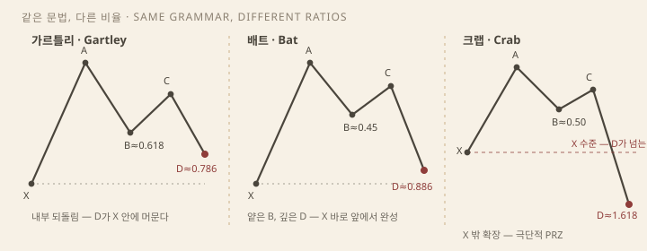
도감은 선언으로 늘어난다. 새 패턴은 검증이 아니라 새 비율 조합의 명명이다 — 5-0, 딥 크랩, 사이퍼 같은 파생이 같은 방식으로 추가됐고, 형제 패턴과의 구분을 위해 B의 허용 창은 점점 좁아졌다. 분류가 늘수록 패턴당 표본은 줄고 맞은 사례는 예뻐진다 — 과최적화와 같은 구멍이다.
무효화는 보통 X 또는 PRZ를 분명하게 지나가는 것이다. 내부 되돌림 패턴(가르틀리·배트)은 X가 천연 앵커다 — X를 이탈하면 형상의 정의 자체가 깨진다. 확장 패턴(버터플라이·크랩)은 D가 이미 X 너머라 X는 스톱이 못 되고, PRZ의 바깥 경계 — 다음 눈금 너머 — 가 무효화다. "분명하게"의 폭은 미리 정한다. 꼬리가 스쳤을 때 살리고 종가 이탈에 폐기하는 식의 사후 조정이 이 체계에서 가장 흔한 변조다.
실행의 표준 배열은 이렇다. 진입은 PRZ 가장자리의 지정가이거나 존 안의 확인 뒤다 — 카니 체계의 트리거는 터미널 바5, PRZ 안에서 처음 패턴 방향 반대로 닫히는 봉이다. 청산 눈금은 AD의 되돌림(0.382, 0.618)이나 A·C의 재방문이다. 조건 — B와 D가 명세 비율에 서고 PRZ에서 반전 봉이 나온다. 시나리오 — XA 방향으로의 복귀를 겨냥한다. 무효화 — X 또는 존 경계의 이탈. 어느 단계든 미리 선언되지 않은 값은 진입 근거가 못 된다.
착시는 여기서 온다. 되돌림 눈금 일곱(0.236~0.886)과 확장 다섯(1.272~3.618)을 한 차트에 걸면 스윙의 어느 가격대든 눈금 하나에 닿고, 겹침은 발견이 아니라 산술이다. 방어는 절차다 — XABCD 다섯 점을 먼저 잠그고, 허용 오차를 먼저 쓰고, 그다음 D를 기다린다. 비율이 안 맞으면 그리지 않는다. 되는 쪽 눈금을 골라 형상에 맞추는 것이 이 도구의 유일하게 확실한 실패 모드다.
XABCD 패턴 자체의 검증은 없다 — 이 체계는 실무자의 규칙 선언이지 측정에서 나온 법칙이 아니다. 가까운 실증은 격자 쪽에 있다. 머피는 피보나치 되돌림을 널리 쓰이는 관행으로 소개하면서 특정 비율의 우월성을 주장하지 않았고[4], 비율과 투사에서 다룬 대규모 백테스트도 같은 방향이다. 아론슨의 기준이 여기에 적용된다 — 주관 패턴은 규칙으로 고정돼야 검증이 서고, 검증 없는 정밀함은 자릿수의 환상이다[5].
주관은 지층을 이룬다. 어느 스윙을 X로 잡는가, "0.618 근처"의 근처는 어디까지인가, 0.79를 0.618로 읽는가 0.786으로 읽는가, 시간 대칭은 재는가 — 카니의 책도 판과 패턴마다 세부가 달랐다. 그리고 무엇보다 구조 맥락 없는 하모닉은 착시다. 형상만 맞으면 레인지 한가운데서도 패턴이 "완성"되지만, 고전의 첫 규칙 — 반전할 추세가 먼저다 — 은 여기서도 먼저다. 추세 끝의 D와 횡보 중간의 D는 같은 눈금이라도 다른 물건이다.
남는 쓸모는 프레임이다. PRZ를 예언이 아니라 리스크 프레임으로 읽으면 — 존과 무효화 가격이 정해지면 손익비를 계산할 수 있고, 그것이 이 체계의 실물이다. 비율은 구조를 만들지 않는다. D가 독립된 근거와 겹칠 때 — 구조의 지지·저항, 유동성 군집(유동성 언어) — 비로소 비율은 체크리스트로서 값한다. 순서는 언제나 구조가 먼저고 격자는 그 위에 얹는다.
대부분 가격의 함수다. 같은 종가를 네 번 세고 컨플루언스라고 부르지 말 것.
모든 보조지표는 변환기다. 입력은 차트 유형의 원료 — 봉의 다섯 값 OHLCV와 시간축뿐이고, 출력은 평균·비율·누적한 파생 시계열이다. 어느 지표든 변수 칸에는 가격·거래량·기간밖에 들어가지 않는다. 엘더의 3분류도 이 기준 위에 서 있다[7].
함의가 둘이다. 첫째, 지표는 정보를 만들지 않고 재배열한다 — 같은 종가의 창 다섯 개는 같은 증거의 다섯 번째 복사다. 둘째, 평활의 대가는 지연이다 — 후행은 결함이 아니라 구조이고, 문제는 후행 신호를 선행 예언으로 파는 해설이다. 할인 가정(전제와 한계) 위에서 지표는 반응의 2차 가공물이다.
그래도 버리지 않는 이유는 압축이다 — 잘 고른 지표 하나가 봉 수십 개의 수동 판독을 한 줄로 바꾼다. 문제는 선택이 아니라 조합이다. 이 챕터는 입력 축으로 네 칸에 놓는다 — 평활(추세)·속도(모멘텀)·크기(변동성)·분포(거래량).
ADX는 방향이 아니라 강도. 25 위 추세, 아래 레인지. 전략 스위치.
숫자 70/30보다 다이버전스와 구조. 추세장에서 과매수는 오래 간다.
ATR은 방향이 없다. 손절과 포지션 크기의 단위. 볼린저 터치가 곧 반전은 아니다.
VWAP은 세션 공정가. OBV는 노력. 프로파일은 가격대별 가치.
이동평균1은 기간 가격의 평활이다. SMA는 종가의 산술평균, EMA는 최근값에 지수 가중(k=2/(N+1)), WMA는 선형 가중이다. 차이는 반응 속도뿐 — 빠를수록 거짓 신호가 늘고 느릴수록 출발이 늦는다. 읽는 문법은 기울기·배열 순서·크로스(골든·데드크로스)다.
MACD2는 제럴드 아펠이 1979년에 낸 변환기다[2]. 본선은 EMA12 − EMA26, 시그널선은 그 EMA9, 히스토그램은 둘의 차이다. 본질은 두 이동평균의 벌어짐과 좁아짐 — 이평 크로스를 한 줄로 재포장한 것이라, MACD 크로스와 이평 크로스를 나란히 보는 것은 같은 문장을 두 번 읽는 것이다.
ADX3는 와일더가 1978년 New Concepts in Technical Trading Systems에서 낸 지표다[1]. +DI와 −DI의 차이에서 DX를 내고 평활한다 — 방향은 DI가 말하고 ADX는 강도만 말한다. 기준선은 25 — 그 위는 추세, 20 아래는 비추세다. 용도는 진입이 아니라 전략의 스위치다 — 추세 국면이면 추세 추종 도구를, 레인지 국면이면 오실레이터를 켠다(기법 간 관계).
일목균형표의 다섯 선 — 전환선(9기간), 기준선(26), 후행스팬, 선행스팬 A·B(구름) — 은 여기서는 재료로 읽는다. 전환선·기준선은 이동평균이 아니라 기간 최고·최저의 중간값이라, 이평 크로스·MACD와 같은 평활 축의 변형이다. 시간론·수준론이라는 원전의 본체는 고전 이론에 있다.
공통 실패는 레인지다 — 크로스가 열리자마자 접히는 휩소가 반복되고, 추세 추종 도구의 승률은 지표가 아니라 국면에 종속된다.
RSI4는 와일더의 또 다른 1978년 산출물이다[1]. 14기간의 상승분 평균과 하락분 평균의 비(RS)를 0~100으로 정규화한다 — RSI = 100 − 100/(1+RS). 평활은 와일더식 재귀5라 지수평활보다 느리다. 70 위 과매수·30 아래 과매도는 레인지 국면의 규칙이고, 정작 와일더가 무게를 둔 것은 다이버전스6와 실패 스윙7이다.
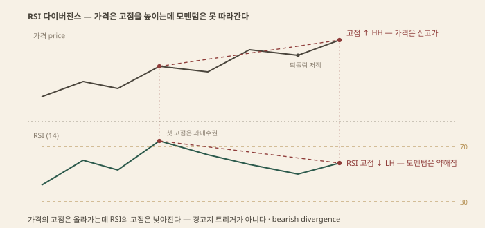
실패 스윙은 오실레이터 안의 구조 돌파다 — RSI가 70 위에서 M자를 그리고 중간 저점을 깨면(30 아래 W자의 중간 고점을 넘으면) 와일더식 확인 신호다. 다이버전스가 경고라면 실패 스윙은 지표 안의 트리거다 — 숫자의 문턱이 아니라 지표의 구조를 읽는다.
스토캐스틱8은 조지 레인이 1950년대 후반에 만든 도구다[9]. %K = (종가 − 기간 최저) ÷ (기간 최고 − 기간 최저) — 종가의 기간 레인지 내 위치를 0~100으로 재고, %D는 %K의 3기간 평균이다. 밑바닥의 가정은 "상승 추세에서 종가는 레인지 위쪽에 붙는다"는 관찰이고, 레인의 규칙도 단호하다 — %D 다이버전스가 "사고 팔 이유가 되는 유일한 신호"다.
공통 실패는 추세장이다. 상한·하한이 있는 오실레이터는 강한 추세에서 한쪽 끝에 오래 박힌다 — 상승장의 RSI는 40~80 대역으로 통째로 올라선다[8]. "과매수라서 판다"는 추세에 역행하는 주문이고, 추세 국면에서 오실레이터는 되돌림 깊이를 재는 자로 격하된다.
볼린저 밴드는 20 SMA ± 2표준편차다[3]. 표준편차9가 변동성의 측정값이라 밴드폭 자체가 변동성의 지도다. 스퀴즈10는 폭이 극단으로 좁아진 상태다 — 변동성은 평균으로 회귀하니 팽창이 온다는 주장이고, 방향은 밴드가 말하지 않는다. 볼린저의 규칙도 분명하다 — 밴드 태그는 신호가 아니고, 강한 추세에서 가격은 상단 밴드를 타고 걷는다(walking the band)[3].
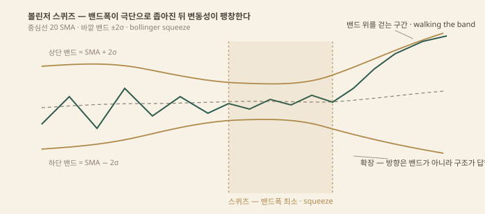
ATR11은 와일더의 세 번째 산출물이다[1]. TR — 고저 폭, 전일 종가와 당일 고가·저가의 차이 중 최대값 — 를 14기간 평활한다. 갭까지 담은 진짜 변동폭이고 방향이 없다 — 순수한 크기의 단위다. 쓰임은 리스크 관리로 모인다 — 손절 거리의 자(예: 2 ATR), 포지션 크기의 분모(고정 리스크 ÷ ATR), 시장 간 변동성 비교의 공용 자다.
켈트너 채널은 체스터 켈트너가 1960년 상품 책에서 낸 밴드다[5]. 원본은 typical price의 10일 평균 ± 평균 레인지, 현대 버전은 EMA ± ATR 배수다. 볼린저와의 차이는 폭의 재료 — 표준편차 대 ATR — 뿐이라 한 차트에 둘을 얹으면 같은 축의 중복이다.
한계는 방향의 부재다 — 약점이 아니라 용도의 경계다. 스퀴즈가 팽창을 예고해도 방향은 구조가 답한다. σ 기반 밴드는 정규분포 직관에 기대는데 수익률의 꼬리는 정규보다 두껍다 — "2σ 밖은 드물다"는 감각이 실제보다 자주 깨진다.
VWAP12은 거래량 가중 평균가다 — Σ(가격×거래량) ÷ Σ거래량을 세션 시작부터 누적한다. 세션마다 리셋되는 장중 공정가이고, 기관 체결이 VWAP 대비로 평가되는 관행 덕에 선 근처 회귀는 자기실현 성분을 갖는다. 앵커드 VWAP은 앵커를 세션이 아니라 사건 — 갭·실적 발표·스윙 저점 — 으로 옮긴 변형이다. 선의 뜻이 바뀐다: "그 사건 이후 평균 매수자의 손익분기"다.
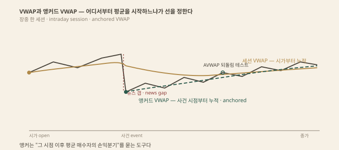
OBV13은 조지프 그랜빌이 1963년에 낸 누적 지표다[4]. 종가가 전일보다 높으면 그날 거래량을 더하고 낮으면 뺀다 — 방향별 거래량의 누적 합이다. 그랜빌의 비유는 증기압 — 거래량은 가격을 미는 노력이고, OBV가 가격의 신고가를 확인하지 못하면 노력 부족의 다이버전스다.
볼륨 프로파일은 봉의 시간축을 버리고 가격대별 거래량을 옆으로 쌓은 분포다. POC14는 가장 많이 거래된 가격 — 그 기간의 공정가 후보다. 가치영역은 거래량의 약 70%를 덮는 띠고 경계가 VAH·VAL이다. HVN15은 두꺼운 노드 — 수용의 흔적이라 천천히 통과하는 회귀의 자석이고, LVN은 얇은 노드 — 거부의 흔적이라 빠르게 지나간다. 종 모양은 균형의 날(회귀), 얇고 긴 꼬리는 비균형의 날(이니셔티브)이다[6].
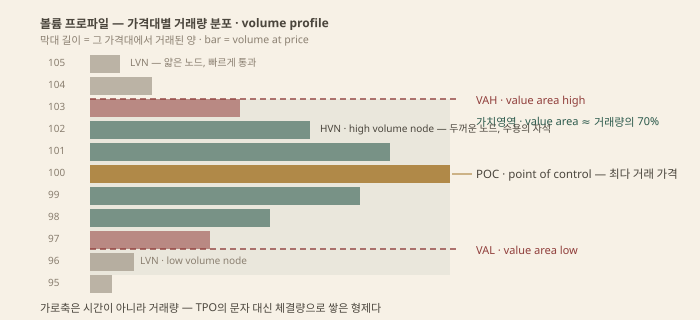
TPO(차트 유형)와의 관계는 형제다 — TPO는 30분 블록 문자로 시간의 분포를, 프로파일은 거래량의 분포를 쌓는다. 같은 경매시장 철학[6], 다른 측정 단위다. 한계는 데이터 의존이다 — 세션 경계와 집계 범위가 그림을 바꾸고, 총거래량이 없는 시장의 틱 볼륨은 프록시다. 미결제약정16은 선물 전용의 별개 축이다.
같은 입력의 재변환은 정보를 더하지 않는다. RSI·스토캐스틱·CCI는 모두 기간 레인지 안 종가의 상대 위치를 재는 계열이다 — 세 창이 동의해도 독립된 증거는 하나다. 둘째 묶음도 같다 — MACD는 이평 차이의 재포장이고 일목 전환선은 9기간 중간값이라, 이평 크로스·MACD·전환선 돌파는 같은 축의 세 창이다.
변동성도 같다 — 볼린저·켈트너·엔벨로프는 중심선 ± 폭이고 재료(σ·ATR·고정 비율)만 다르다. 넷째 묶음은 비율이다 — 피보 되돌림(비율과 투사)·OTE(유동성 언어)·하모닉 PRZ(하모닉)는 한 스윙의 깊이를 0.618·0.705·0.886으로 재는 것이다. 측정이 세 번이지 증거가 세 개가 아니다.
위험한 이유는 심리다 — 같은 축의 지표 넷이 동의하면 확신은 올라가도 자유도는 늘지 않고, 창을 늘릴수록 우연히 맞는 조합도 늘어난다. 다중비교(전제와 한계)의 화면판이다. 컨플루언스를 부르기 전에 묻는다: 이 창들의 입력은 서로 다른가.
보완이 되려면 축이 달라야 한다 — 구조 × 거래량/체결 × ATR 크기 × 시장 폭. 각 축이 다른 질문에 답한다.
| 축 | 도구 예 | 답하는 질문 |
|---|---|---|
| 구조 | 스윙 · 폴라리티 · 추세선 | 어디서 싸우는가 |
| 시장 폭 · 국면 | ADX · 밴드폭 | 추세인가 레인지인가 |
| 거래량 · 체결 | 프로파일 · OBV · VWAP | 그 가격은 수용됐는가 — 노력이 따르는가 |
| 크기 | ATR | 손절은 얼마나, 포지션은 얼마나 |
조합은 절차다. 구조가 자리를 정하고(가격 구조), ADX가 국면을 가르고, 프로파일·OBV가 수용을 확인하며, ATR이 거리와 크기를 결정한다 — 네 창이 네 질문에 답할 때만 보완이다. ADX가 추세 추종과 오실레이터 사이의 스위치가 되는 식으로 지표가 지표를 켜는 것도 같은 논리다(기법 간 관계).
지표는 답을 주는 기계가 아니라 질문을 나누는 프레임이다. 같은 질문을 네 창에 물어도 답은 하나다.
같은 가격이라도 어느 타임프레임에서, 어느 세션에, 몇 종목의 동의로 움직였는지가 읽기를 갈라 놓는다. 시간은 '언제'가 아니라 '지금 어느 국면인가'를 재는 축이다.
같은 하루도 주봉 위에서는 상승 추세 안의 되돌림 한 봉일 수 있다. 타임프레임 계층은 한 시계열을 다른 배율로 자른 것이다(가격 구조) — 어느 한쪽이 진짜인 게 아니라 역할이 다르다. 엘더가 체계화한 삼중창1이 표준 프레임이다[1]. 첫째 창은 시장 조류 — 주간 차트의 추세 지표로 거래가 허용되는 방향을 정한다(엘더는 MACD 히스토그램의 기울기를 썼다). 둘째 창은 파도 — 일간 오실레이터로 조류에 반하는 되돌림의 끝을 찾는다. 셋째 창은 잔물결 — 전일 고가 돌파 스톱 같은 기법으로 실행한다. 관행적 배율은 5:1 안팎이다 — 주간이 조류면 일간이 파도, 일간이 조류면 시간봉이 파도다.
문법은 단순하다. 상위가 방향 필터, 하위가 트리거다. 주간 조류가 위를 볼 때 일간 과매도 조정은 매수 후보가 되고, 그 반대는 성립하지 않는다. 무효화도 두 겹이다 — 진입 자리의 무효화는 하위 스윙에 두고, 시나리오 자체의 무효화는 상위 추세의 전환에 둔다. 한계도 두 겹이다. 배율은 관행이고, 계층을 늘려도 같은 가격의 재포장이 늘어날 뿐이다 — 상위와 하위는 독립된 두 확인이 아니라 한 데이터의 두 자르기다.
일목균형표의 상자에서 본체는 5선이 아니라 시간론이다(고전 이론). 가정은 하나 — 시장의 등락은 일정한 날짜 수의 리듬으로 변한다. 기본수치2 9·17·26에 복합수치 33·42, 연장수치 65·76·129·172가 뒤를 잇는다. 과거 변곡(고점·저점)에서 이 일수를 센 날이 변화일 — 다음 변곡이 올 수 있는 후보 날짜다[2]. 대등수치3는 간격의 반복이다 — 직전 등락이 N일이었다면 진행 중인 등락도 N일 부근에서 끝난다는 계산이다.
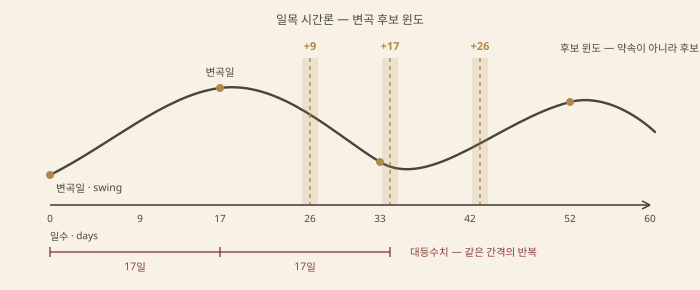
읽는 법의 요점은 하나 — 윈도이지 약속이 아니다. 후보 날짜가 오면 가격이 실제로 꺾이는지를 본다. 윈도 안에서 고점 형성 뒤 하락 전환이 나오면 시나리오가 열리고, 무효화는 그 고점의 돌파다. 날짜만 보고 미리 걸면 달력 점술이다. 근거도 물어야 한다 — 9와 26은 전후 일본의 주 6일 거래에서 주·월 거래일 수다. 주 5일 시장에서 이 수치가 환경의 산물인지 보편 리듬인지는 미지수다. 후보 수치가 늘어날수록 어떤 변곡도 그중 하나에는 걸린다 — 확인편향의 덫이다(전제와 한계).
지수는 시가총액 가중이라 소수 대형주가 지수를 끌 수 있다. 지수가 올라도 대부분의 종목이 내리면 그 상승은 좁다. 시장 폭4은 그 참여를 재는 지표군이다. A/D 라인5은 매일 (상승 종목 수 − 하락 종목 수)를 누적한 선이다. 지수가 신고가인데 A/D 라인이 전고점을 못 넘으면 폭 다이버전스다 — 다우의 상호 확인 원리를 지수 내부로 들여온 것이다. 두 지수가 확인하듯 지수와 그 구성 종목들도 서로 확인해야 한다(고전 이론).
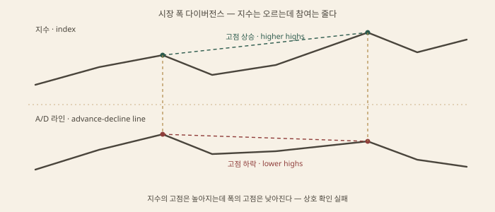
맥클렌 오실레이터6는 A/D 차이의 19일과 39일 지수이동평균의 차이고, 그 누적이 맥클렌 서메이션이다 — 오실레이터가 단기 수급, 서메이션이 중기 흐름을 잰다[5]. 신고·신저7는 52주 신고가와 신저가 종목 수의 격차다 — 상승 말에 신고 종목이 줄면 선두가 사라지는 장이다.
시나리오는 확인의 부재에서 연다. 지수 신고가와 폭의 고점 하락이 겹치면 경고, 거기에 구조의 전환(CHoCH)이 오면 시나리오가 열리고, 무효화는 A/D 라인이 신고가를 회복하는 것이다. 한계는 속도다 — 폭 다이버전스는 수개월을 끌 수 있어 타이밍 도구가 아니라 경고등이다. 현대 지수의 구성도 오염원이다 — 우선주·채권형 종목·ETF가 늘며 등락 통계의 순도가 떨어졌다는 지적이 있다.
갭은 인접한 두 봉의 가격대가 겹치지 않는 미체결 구간이다 — 캔들 사전에서는 '창(窓)'이다8. Edwards와 Magee의 분류가 표준이다[3]. 보통 갭은 레인지 안에서 거래량 없이 열리고 며칠 내 메워진다 — 정보 가치가 얇다. 돌파 갭은 레인지나 패턴 완성의 경계를 거래량과 함께 벗어나는 갭이다 — 메워지지 않는 것이 곧 확인이다. 도피 갭은 추세 중간의 재가속으로, 측정 갭이라는 별명처럼 발생 지점이 대체로 추세의 중점이 된다. 소진 갭은 추세 말의 마지막 도약이다 — 며칠 내로 메워지면 소진으로 확정된다.
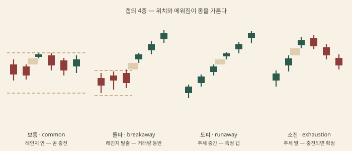
분류는 사후적이다 — 갭은 생긴 날에 이름표 없이 열리고, 이후 메워지는지로 종이 정해진다. 그래서 읽기는 조건문이다. 돌파로 읽었으면 무효화는 갭의 완전 충전이고, 도피로 읽었으면 측정 목표까지가 기대 구간이다. FVG는 이 사건의 장중 스케일 버전이다 — 3봉 불균형의 빈 구간은 분봉 위의 갭이다(유동성 언어). 한계는 속설과의 거리다 — '갭은 메워진다'는 말은 보통·소진 갭에만 정의상 성립한다. 돌파·도피는 안 메워지는 것이 정의라, 메워진 갭만 모아 보면 통계가 스스로를 증명하는 셈이다.
24시간 시장도 한 덩어리가 아니다. FX·선물·크립토의 하루는 참여자의 시간대로 나뉜다. 아시아 시간(도쿄)은 대체로 얇은 레인지, 런던 오픈에서 변동성이 켜지고, 런던-뉴욕 겹침이 하루 유동성의 정점이다. 아시아 레인지의 고저는 그래서 런던의 재료다 — 그 위아래에 쌓인 스톱이 다음 세션의 유동성 풀이 된다(유동성 언어).
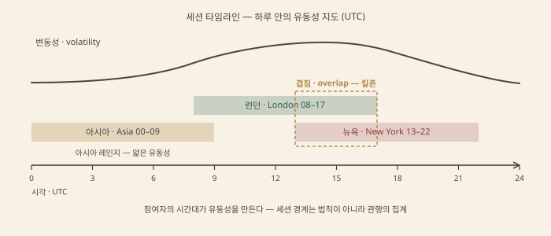
오프닝 레인지9는 개장 직후 첫 구간의 고저다 — 크레이블이 단기 가격 패턴의 통계로 그 돌파를 검증했다[4]. 마켓 프로파일의 이니셜 밸런스는 첫 1시간의 가격 분포이고, 그 상하 돌파가 일중 방향의 신호로 읽힌다(차트 유형). ICT의 킬존은 이 통계의 브랜드화다 — 런던·뉴욕 킬존은 사실상 세션 오픈 전후의 유동성 창이고, 그 안의 스윕은 오픈 유동성에 몰리는 스톱런을 다른 이름으로 부른 것이다10.
한계는 경계의 관행성이다. 세션 시각은 법칙이 아니라 참여자 관행의 집계다 — 서머타임, 거래소 개장 시각 변경, 주말 갭이 통계를 흔든다. 관행이 바뀌면 지도도 갈아야 한다.
머피의 인터마켓 분석11은 채권·달러·상품·주식을 한 경제의 다른 표정으로 묶는다[6]. 고전적 순환 시계에서는 채권 가격이 먼저 고점을 찍고(금리가 바닥을 치고), 주식이 뒤따르고, 상품이 마지막에 돈다. 달러와 상품(금·원유)은 대체로 역상관이다. 결이 이 챕터의 다른 도구와 같다 — 다우의 상호 확인을 두 지수에서 자산군으로 넓힌 것이다.
쓰임도 확인이다. 주식이 신고가인데 채권 수익률이 이미 하락으로 꺾였다면 안전자산 선호가 먼저 움직인 것 — 폭 다이버전스처럼 경고로 읽는다. 반대로 주식 조정 중 채권·달러가 잠잠하면 리스크오프가 아니라 개별 조정으로 읽는다. 한계는 부호의 이동이다. 상관은 고정 상수가 아니라 국면 변수다 — 양적완화 국면에서는 주식과 채권 가격이 오래 같은 방향으로 갔고, 달러-상품 역상관도 국면마다 뒤집혔다. 상관표를 법칙으로 쓰는 순간 이 도구는 시계가 아니라 점술이 된다.
어떤 기법도 혼자 쓰이지 않는다. 거래 한 건은 여러 질문에 답을 요구하고, 기법 하나는 그중 하나에만 답한다. 관계의 지도가 곧 체계다.
조합의 출발점은 역할 분담이다. 기법 하나는 질문 하나에 답한다 — 이동평균은 방향을, ADX는 강도를, ATR은 크기를. 그런데 거래 한 건이 요구하는 답은 넷이다 — 어느 국면인가, 어디서인가, 언제인가, 얼마나인가. 네 답을 기법 하나에서 얻으려는 것이 지표 만능의 착각이고, 한 질문에 기법 넷을 붙이는 것이 중복의 착각이다. 조합은 취미가 아니라 빈칸 채우기다.
같이 쓸 수 있는지는 축1이 가른다. 축은 지표의 입력과 지표가 답하는 질문이다 — 같은 종가 열을 기간으로 평활해 방향을 묻는 것들은 전부 같은 축이다. RSI·스토캐스틱·CCI는 산식이 달라도 입력이 같다 — 한 종가 창의 상대 위치를 세 번 재는 것이다. 셋이 동의해도 증거는 하나다. 엘더의 지표 분류가 이 원리다 — 추세 지표·오실레이터·기타로 나누고 각 군에서 하나씩만 쓰라 했다[1]. 머피의 재료 분리도 같다 — 가격·거래량·미결제 약정처럼 원료가 다른 것을 겹칠 때만 확인이 성립한다[2].
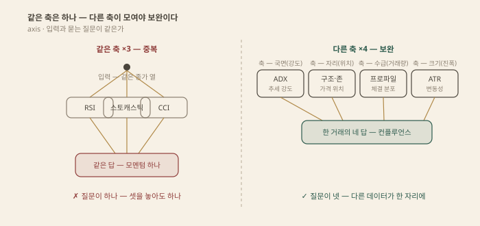
컨플루언스2는 그래서 정의가 있다 — 다른 데이터, 다른 논리가 같은 결론에 모일 때다. 지지 존과 피보 눈금과 가치영역 하단의 겹침은 같은 스윙을 재는 눈금 셋이라 축이 하나에 가깝고, 구조 전환과 거래량 급증과 상위 국면의 일치는 입력이 달라 축이 셋이다. 판별 문장은 하나다 — "이 창의 입력은 앞의 창과 다른가." 한계는 공유 입력이다 — 겉모습이 다른 지표도 종가의 함수면 축이 하나로 접힌다(보조지표).
같은 원리를 실제 조합에 대입하면 메커니즘이 보인다. 각 행의 역할 분담이 곧 '두 기법이 다른 질문에 답한다'는 뜻이다.
| 조합 | 역할 분담 | 왜 맞는가 — 메커니즘 |
|---|---|---|
| 다우 구조 + 거래량 | 정의와 확인 | 구조가 추세의 문장을 세우고(HH/HL) 거래량이 그 움직임의 실체력을 잰다 — "거래량은 추세를 확인해야 한다"가 다우 원리 안에 들어 있는 이유다[2]. 거래량 없는 돌파는 확인 없는 문장이다. |
| 와이코프 국면 + 볼륨 프로파일 | 원인과 가치 영역 | 국면 판독은 "지금 매집인가 분산인가"이고 프로파일은 "거래가 어느 가격대에 몰렸는가"다. 원인·결과 법칙의 원인이 쌓인 자리를 가치영역·HVN이 눈으로 보여준다 — 서사와 증거의 짝이다(고전 이론, 차트 유형). |
| ADX 스위치 + (추세면 MA, 레인지면 RSI) | 지표가 서로를 켬 | ADX는 방향이 아니라 강도라서 진입 도구가 아니라 선택기다 — 기준선 위면 추세 추종(MA)을, 아래면 오실레이터(RSI)를 켠다. 지표가 지표를 켜는 구조가 스위치3다. |
| 아무 진입 + ATR 손절 | 예측과 리스크 분리 | 진입은 방향 가설이고 ATR은 그 가설과 무관한 진폭의 자다 — 손절 거리를 시장의 변동성에 묶고 포지션 크기를 '고정 리스크 ÷ 거리'로 정한다. 진입이 틀려도 리스크는 이미 정해져 있다. |
| 스윕 + CHoCH + 불균형 재방문 | 사건 → 확인 → 실행 | 시간 순서가 곧 필터다 — 스윕이 스톱이 실제로 털렸다는 사건, CHoCH가 구조의 동의, 재방문이 무효화가 가까운 진입 자리다(유동성 언어). |
마지막 조합은 순서가 곧 논리라 따로 본다. 스윕만 보고 들어가면 레인지 이탈의 역추세에 말린다 — 이탈이 진짜면 그 자리에 스톱이 없다. CHoCH를 기다리면 이탈이 회수였다는 구조의 동의를 얻는다. 재방문까지 기다리는 이유는 손절 거리다 — 변위 직후 추격하면 무효화까지 멀고, 남긴 불균형을 다시 찍을 때 들어가면 스윕 저점이 가까운 스톱이 된다. 세 단계는 각각 앞 단계의 함정을 걸러낸다 — 사건 없는 확인은 근거 없는 진입이고, 확인 없는 사건은 가짜돌파와 구분이 안 된다.
조합 표의 기법들은 한 가문의 멤버다. 지식 지도의 타임라인을 여기서는 '무엇을 더했는가'로 다시 읽는다.
| 단계 | 더한 것 |
|---|---|
| 테이프 리딩 (~1900) | 원료 자체 — 체결 가격·물량의 흐름을 데이터로 삼은 최초의 읽기[3] |
| 다우 (1902–32) | 추세의 문법 — 세 운동, 세 국면, 상호 확인, 거래량 확인[2] |
| 와이코프 · P&F (1910–31) | 수급의 서사 — 매집·분산 국면과 노력대결과. P&F는 시간을 버린 기록법 |
| 패턴 사전 (1948) | 형상의 분류 — Schabacker의 정리를 Edwards·Magee가 도감으로 묶었다[4] |
| 엘리엇 · 간 (1930–50s) | 법칙화 — 파동의 프랙탈과 시간=가격의 기하 |
| 일목 (1968) | 패키지 — 시간·파동·가격 3론과 5선 도구가 한 상자 |
| 컴퓨터 지표 (1978–) | 프록시의 대중화 — 와일더의 RSI·ATR·ADX 이후 계산이 누구의 것이 됐다[5] |
| 프로파일 (1984) | 축의 전환 — 시간을 가격 분포로 눕힌 TPO |
| VSA (1993) | 공식화 — 와이코프를 봉의 스프레드×거래량×종가 위치로 옮김[6] |
| 프라이스 액션 (2000s) | 탈지표 — 봉 단위 읽기로의 회귀 |
| ICT · SMC (2010s) | 번역 — 고전 사건을 유동성 어휘로 재명명 |
| 오더플로 (현재) | 귀환 — 풋프린트·델타·CVD로 테이프 리딩이 디지털로 돌아옴(보충 영역) |
계보가 말해 주는 것은 어휘의 팽창이다. 진짜로 바뀐 것은 두 가지뿐이다 — 데이터의 해상도(전표에서 일봉·분봉·호가와 체결 단위로)와 이름이다. 스윕은 스프링이고 킬존은 세션이며 오더블록은 공급·수요 존이다 — 재명명은 지식의 증가가 아니라 색인의 증가다(지식 지도). 새 이름이 새 알파4는 아니다 — 알파는 기댓값이 만들고 이름은 검색이 만든다. 그렇다고 진보가 없던 것도 아니다 — 계산과 데이터 접근의 민주화는 실물이다. 다만 읽기의 문법은 다우의 것에서 거의 나가지 않았다.
계보는 진보 서사가 아니라 주의표다 — 재명명은 원전과의 연결을 끊어 검증 경로를 지운다. 대신 실용은 남는다 — 새 이름의 조상이 보이면 읽을 원전이 정해진다. 오더블록의 조상은 공급·수요 존이고 그 조상은 와이코프의 매집·분산 도표다.
조합을 짜는 절차는 거꾸로다 — 기법에서 시작하지 않고 질문에서 시작한다. 거래 한 건은 네 질문의 답을 요구하고, 각 기법은 그중 하나의 답이다.
| 묻는 질문 | 답하는 기법 | 답의 형태 |
|---|---|---|
| 지금 무슨 국면인가 | 구조의 HH/HL·레인지, ADX, 밴드폭, 상위 타임프레임, 와이코프 국면5 | 추세 / 레인지 판독 |
| 어디서 할 것인가 | 지지저항 존, 프리미엄·디스카운트, 프로파일 노드, 피보 눈금 | 존 — 가격대 |
| 언제 들어가는가 | 스윕 회수, CHoCH, 패턴 완성·넥라인, 캔들 트리거, 세션·변화일 윈도 | 트리거 — 사건 |
| 얼마나 걸 것인가 | ATR, 측정 목표가, R배수6 | 거리와 크기 |
같은 질문에 답하는 기법들은 확인이 아니라 대안이다. 지지 존과 EQ와 0.5 되돌림은 '어디서'의 세 후보다 — 겹치면 근거가 늘어난 게 아니라 눈금이 조밀해진 것이다(비율과 투사). 컨플루언스가 되려면 다른 질문의 답이 같은 자리를 가리켜야 한다. 반대로 답이 없는 질문은 허용된다 — "모른다"도 출력이다. 국면을 못 읽겠으면 실행 도구를 켜지 않는 것이 절차의 결과이고, 트리거가 안 오면 거래가 없다는 것이 시나리오 프레임의 마지막 문장이다.
체계는 슬롯이다 — 국면 판독 하나, 자리 하나, 실행 트리거 하나, 리스크 단위 하나. 슬롯이 정해지면 기법은 교체 부품이 된다 — MA를 일목으로, 캔들 트리거를 패턴 완성으로 갈아 끼워도 틀이 산다. 이 조립의 고전이 엘더의 삼중창이다 — 상위가 국면, 중간이 되돌림, 하위가 실행이라는 역할 배정이다[1](시간·장세).
이 다섯 줄이 앞의 모든 조합을 한 절차로 꿴 것이다 — 국면(다우·ADX), 자리(존·프로파일), 확인(거래량·구조 전환), 실행(재방문), 크기(ATR·R). 조합은 부품 나열이 아니라 절차다.
조합은 알파를 만들지 않는다 — 역할을 나눌 뿐이다. 다섯 창이 전부 답해도 기댓값은 시장이 정한다. 분담이 잘됐다는 것은 절차가 성립한다는 뜻이지 우위가 생겼다는 뜻이 아니다.
필터 하나는 파라미터 하나다. 규칙을 추가할수록 과거 설명력은 오르고 미래 성능은 떨어진다 — Aronson이 규칙으로 고정된 주장만을 검증 대상으로 삼은 이유다[7]. 슬롯을 추가하는 것과 같은 슬롯에 부품을 추가하는 것은 다르다 — 후자는 자유도를 늘리지 않고 과최적화만 늘린다(전제와 한계).
마지막 함정은 명목 축이다 — 창은 다섯인데 입력이 전부 종가면 축은 하나다. 겉으로 다른 기법이 같은 데이터의 함수면 분담은 서류상의 것이고, 동의는 사건이 아니라 같은 계산의 반복이다.
다섯 층 어디에도 앉지 않지만 알아야 할 영역들이다 — 봉 단위 수급 읽기(VSA), 시장을 경매로 보는 철학(TPO), 체결 수준의 오더플로, 그리고 이 모든 것이 서는 바닥인 백테스트 위생. 끝은 본류가 아닌 주변부와 함정 목록이다.
톰 윌리엄스(Tom Williams)가 2000년 Master the Markets에서 낸 VSA1는 와이코프의 노력 대 결과를 봉 하나로 압축한 읽기다[1]. 입력은 세 개다 — 스프레드(고저 폭), 거래량, 종가의 봉 내 위치. 넓은 스프레드에 큰 거래량은 노력이 일을 한 것이고, 같은 노력에 좁은 스프레드는 저항에 부딪힌 것이다. 와이코프가 레인지 국면에서 읽던 판정을 윌리엄스는 봉 단위 신호의 도감으로 내렸다(고전 이론).
대표 신호는 이름 있는 세 사건이다. No Demand2는 상승 봉인데 스프레드가 좁고 거래량이 평균 이하로 닫히는 상태 — 전업 매수가 실리지 않은 상승이라 약세 배경에서 경고다. Stopping Volume3은 반대 끝이다 — 하락 봉에 구간 최고 거래량이 붙는데 종가가 저가 위로 밀려 닫힌다. 쏟아진 매도를 받아 낸 주문이 있었다는 뜻이다. Upthrust4는 저항 위를 찌르는 봉이 큰 거래량과 함께 하단에서 닫히는 것 — 와이코프의 UT/UTAD와 같은 사건이고 분산의 확인이다.
조건 → 시나리오 → 무효화로 옮기면 이렇다. 조건 — 지지 후보에서 Stopping Volume이 나오고 다음 봉들이 저거래량으로 식는다. 시나리오 — 공급 소진과 반등. 무효화 — Stopping Volume의 저가 이탈. 한계는 둘이다. '큰 거래량'과 '넓은 스프레드'는 되돌아보는 창의 상댓값이라 선언된 임계가 없고, 윌리엄스는 통계를 공개하지 않았다. 그리고 쿨링의 VPA[3]는 이 체계를 FX 틱 볼륨 위에 올린 판본이다 — 틱은 체결량이 아니라 호가 갱신 횟수라, 그 위의 VSA는 프록시를 읽는 셈이다(아래 오더플로 절).
스타이들마이어의 경매시장 이론은 시장을 공정가를 찾는 경매로 본다[2]. 가격은 위로 경매되다 비싸서 사는 이가 없어지면 멈추고, 아래로 경매되다 싸서 파는 이가 없어지면 멈춘다 — 그 사이에서 대부분의 거래가 이뤄진 띠가 가치다. 도구는 차트 유형에서 다룬 TPO다 — 30분 블록 문자를 거래된 가격 행에 쌓는 분포로, 가장 긴 행이 POC이고 약 70%를 덮는 띠가 가치 영역이다.
핵심 판정은 가치 영역 밖에서 일어난다. 가격이 가치 위로 나갔을 때 갈리는 두 시나리오 — 거부면 다시 가치로 회귀(responsive), 수용이면 새 가치가 거기서 개시(initiative)된다. 어느 쪽인지는 머무는 시간이 말한다 — 이탈한 가격대에 TPO가 쌓이면 수용이고, 꼬리만 남기고 돌아오면 거부다. 같은 읽기가 아래쪽 가치 영역에서도 거울로 성립한다.
프로파일의 모양도 메시지다. 한 가격대에 두루 쌓인 균형(balanced) 날의 POC는 그날의 공정가로 힘이 세지만, 분포가 길게 늘어지는 비평형(imbalanced) 날의 POC는 약하다 — 지나간 자리라 머문 자리가 아니기 때문이다. 추세일의 짧은 POC를 다음 날의 지지·저항으로 세우면 약한 선을 잡은 것이다. 한계는 측정 의존 — 가치 영역은 세션 경계와 데이터 피드를 따라가고, '공정가'는 정의상 가장 오래 머문 자리라 내일도 공정이란 보장은 없다.
오더플로는 봉을 가격대별 체결로 쪼개 보는 확대경이다 — 풋프린트가 그 표시다(차트 유형). 봉 안 각 가격 행에 매도 측 체결(bid에 친 주문)과 매수 측 체결(ask에 친 주문)이 나란히 찍히고, 그 차이가 델타5다 — 어느 쪽이 더 공격적으로 시장가를 던졌는가의 순수급이다. 델타를 시간 순으로 누적한 선이 CVD6다.
읽는 사건은 둘이다. 첫째, 다이버전스 — 가격이 신고가인데 CVD의 고점이 낮아지면 공격 매수가 따라가지 못하는 것이다. 둘째, 흡수7 — 델타가 한쪽으로 크게 치우치는데 가격이 안 움직이면, 공격 주문을 지정가 물량이 받아 먹은 것이다. 와이코프의 노력 대 결과, VSA의 스프레드 대 거래량과 같은 문장이 체결 단위로 온 것이다 — 이름은 셋이고 뼈대는 하나다.
생명줄은 데이터 품질이다. 거래소 선물·주식은 중앙 오더북의 실체결이라 델타가 진짜지만, 분산 시장인 FX와 CFD의 틱은 브로커의 호가 갱신 횟수다 — 체결이 아니다. CFD 틱의 델타를 거래소 데이터처럼 읽는 것은 단위가 다른 물건을 같은 눈금으로 재는 오류다. 그리고 보이는 주문은 의도가 아니다 — 스푸핑과 아이스버그가 호가창의 증거력을 깎고, 델타는 공격성을 보여 줄 뿐 그 뒤의 의도는 보여 주지 않는다.
이 책의 모든 장이 서는 바닥이다. 검증이 서려면 규칙이 먼저 고정돼야 한다 — 진입·청산·무효화·사이징이 시험 전에 선언되고, 같은 차트를 두 사람이 읽어도 같은 답이 나와야 규칙이다[4]. 주관 엘리엇 파동이나 주관 오더블록은 이 문턱을 못 넘는다 — 라벨이 읽는 사람을 따라 움직이면 '아닌 사례'가 정의되지 않고, 승률 스크린샷은 표본이 아니라 선별이다.
위생은 네 줄이다. 첫째, 룩어헤드8 금지 — 신호에 쓰는 모든 값은 그 봉이 닫힌 시점에 존재해야 한다. 둘째, 비용 — 스프레드·수수료·슬리피지를 넣기 전의 우위는 아직 발견이 아니다. 셋째, 표본 외 — 최적화에 쓴 구간은 평가에서 뺀다. 넷째, 다중비교 — 규칙을 수백 개 시험하면 우연이 수익 곡선으로 위장한다(전제와 한계).
워크포워드9는 셋째의 실행 형식이다 — 인샘플에서 고르고 바로 다음 구간에서만 채점한 뒤 창을 앞으로 굴린다[5]. 그래도 남는 한계가 있다 — 레짐이 바뀌면 과거의 표본 외도 미래를 보장하지 않고, 워크포워드 자체도 반복해 돌리면 시험이 시험을 오염시킨다. 위생은 의심의 절차지 확신의 인증이 아니다.
달 주기, 금융 점성술, 비밀로 전해진다는 간 각도 — 이 책의 본류 바깥이다. 공통점은 검증이 설 수 없는 형태라는 것이다 — 규칙이 선언되지 않고, 실패는 '해석이 부족해서'로 회수되며, 틀리는 경우가 정의되지 않는다. 앞 절의 문턱은 사전 고정 규칙·표본 외·틀림의 조건이다 — 이 셋을 한 개도 못 넘는다.
이 책 전체에서 가장 자주 나는 사고를 모았다. 각 항목에 왜 함정인지와 방어 한 줄을 달았다.
같은 사건을 다른 학파가 어떻게 부르는지 모아 둔 사전이다. 본문으로 건너뛸 수 있다.
본문 아래 칸에 적은 관찰이 여기로 모인다. 서버로 올라가지 않고 이 브라우저에만 남는다.
항목에 묶지 않은 독립 기록.